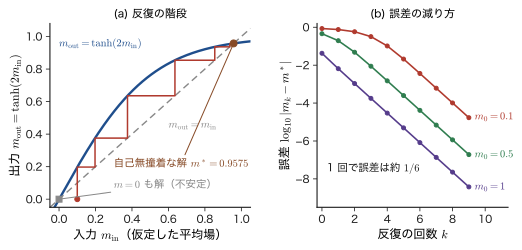
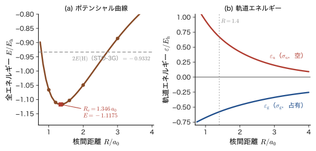
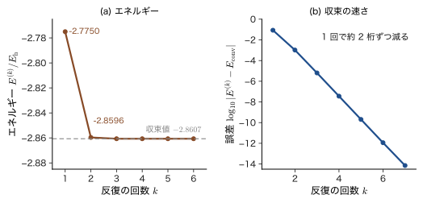
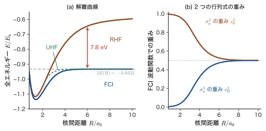

第37章自己無撞着場（SCF）と Roothaan–Hall 方程式 — 基底関数展開から計算化学へ
混み合った駅の構内を歩くとき，私たちは周りの人の流れを見て進路を決める．ところが周りの人々も，同じように私たちを含む周囲の流れを見て進路を決めている．だれの進路も「他の人々の平均的な流れ」で決まり，その流れは全員の進路の結果である．「答えを使って問いを作る」この循環は，多電子系の量子力学でも起こる．前章の Hartree–Fock 方程式では，1 個の電子は，ほかの電子がつくる平均の場（Coulomb ポテンシャルと交換の効果）のなかを運動する．ところが，その平均の場をつくるのは，これから求めようとする軌道そのものである．方程式の演算子が，解によって決まるのである．
この循環を解く方法が自己無撞着場（self-consistent field，SCF）法である．適当な軌道から出発して平均の場を作り，その場の中で軌道を解き直し，新しい軌道でまた場を作り直す，という反復を，入力の軌道と出力の軌道が一致（無撞着）するまで繰り返す．古典物理にも同じ発想がある．強磁性体の Weiss（ワイス）の分子場理論では，各スピンは周りのスピンがつくる平均の磁場を感じて向きを決め，その向きの平均がまた磁場を決める（AD 03 第51章 51.4 の常磁性体の $\tanh$ の式を，磁場が自分の磁化で決まるように読み替えたものである）．本章では，この反復の考え方を 37.1 節で先に理解する．
もう 1 つの課題は，軌道の方程式を，計算機が扱える形にすることである．分子の軌道を 3 次元の微積分方程式として直接解くのは難しい．そこで軌道を基底関数の 1 次結合 $\psi_i=\sum_\mu C_{\mu i}\phi_\mu$ で書き，未知数を係数 $C_{\mu i}$ に置き換える．これは第31章の線形変分法の発想そのものである．変分の条件は，$H\bm{c}=ES\bm{c}$ の形の永年方程式を非線形にした行列方程式 $FC=SC\varepsilon$（Roothaan–Hall 方程式）になる．行列 $F$（Fock 行列）に係数 $C$ が入っているので，これを SCF の反復で解く．エネルギーは，原子単位のハートリー $E_{\mathrm h}$（$1\,E_{\mathrm h}=27.2\ \mathrm{eV}$）で書く．
この方程式は，Gauss 型基底を使うすべての量子化学計算（PySCF などの出力の $-1.1167\,E_{\mathrm h}$ という全エネルギーや，最高占有軌道 HOMO と最低空軌道 LUMO のエネルギー）の中心にあり，姉妹編の「マテリアル計算科学」（AD 05）と，Kohn–Sham 方程式を基底関数で解く「密度汎関数理論」（AD 07）の土台でもある．
この章の地図．
- 37.1：SCF の考え方と手順（反復して解く）．
- 37.2：閉殻分子のエネルギーと，基底関数展開・密度行列．
- 37.3：$FC=SC\varepsilon$ を一行も飛ばさずに導き，$S^{-1/2}$ で解く．
- 37.4：$\mathrm{H_2}$（STO-3G）を手で解く．$S_{12}=0.6593$ から $E=-1.1167\,E_{\mathrm h}$ まで．
- 37.5：HeH$^+$ の反復表，収束の工夫，RHF・UHF・ROHF．
- 37.6：電子相関．$\mathrm{H_2}$ の解離で RHF が失敗する理由．
- 37.7：Kohn–Sham 方程式への橋渡し，PySCF の出力，計算量（AD 05，AD 07 へ）．
- Fock 演算子が自分の解に依存する非線形の問題を，SCF の反復で解く手順と，収束判定・初期推定・DIIS の考え方を説明できること
- 閉殻分子の Hartree–Fock エネルギー $E=2\sum_ih_{ii}+\sum_{i,j}(2U_{ij}-J_{ij})+V_{\mathrm{nn}}$ を，スピンを先に積分して導き，係数 $2$ と $1$ の由来を数えられること
- 基底関数展開と密度行列 $P_{\mu\nu}=2\sum_iC_{\mu i}C_{\nu i}^*$ を導入し，$\mathrm{Tr}(PS)=N$，$PSP=2P$，$E=\tfrac12\sum P(h+F)+V_{\mathrm{nn}}$ を示せること
- Lagrange の未定乗数法で Roothaan–Hall 方程式 $FC=SC\varepsilon$ を導き，Löwdin の $S^{-1/2}$ で通常の固有値問題 $F'C'=C'\varepsilon$ に直して解けること
- 水素分子（STO-3G，$R=1.4\,a_0$）の RHF を手計算で解き，$S_{12}=0.6593$，$h_{11}=-1.1204$，$\mel{11}{v}{11}=0.7746$ から $\varepsilon_{\mathrm g}=-0.5782$，$E=-1.1167\,E_{\mathrm h}$ を得られること
- HeH$^+$ の SCF の反復表を読み，エネルギーの誤差が 1 回ごとに約 2 桁減る理由（変分性）と，振動する反復のダンピング・DIIS による収束，RHF・UHF・ROHF の違いを説明できること
- 電子相関エネルギー（He：$-1.14\ \mathrm{eV}$），$\mathrm{H_2}$ の解離で RHF が失敗して FCI が成功する理由（イオン項 50 %）を説明できること
- Kohn–Sham 方程式が Fock の交換項を局所ポテンシャル $v_{\mathrm{xc}}$ に置き換えただけの同じ形の方程式であること，PySCF の出力の読み方，計算量のスケーリングを理解すること
もとにしたノート：本章はノートにない内容を補った章である．関連するノート：望月泰英『物理学ノート 量子力学3』 p. 45（自己無撞着），pp. 58–59（線形変分・Lagrange の未定乗数法），pp. 84–85（Gauss 基底）．
37.1 自己無撞着場（SCF）— 解を使って方程式を作り直す
37.1.1 演算子が解に依存する — 非線形の固有値問題
前章で導いた Hartree–Fock 方程式は，占有軌道 $\psi_i$ が満たす 1 電子の固有値方程式
\begin{equation} \hat{F}\,\psi_i=\varepsilon_i\,\psi_i \label{eq:37-hf} \end{equation}である．$\hat{F}$ は Fock 演算子（第36章 36.5）で，1 電子の運動エネルギーと核との引力 $\hat{h}$ に，ほかの電子がつくる平均のポテンシャル（Coulomb 演算子 $\hat{U}_j$）と，交換の効果（交換演算子 $\hat{J}_j$）を加えたものである．閉殻の場合の具体的な形は 37.2 節と 37.3 節で書く．いまは，$\hat{U}_j$ と $\hat{J}_j$ が占有軌道 $\psi_j$ から作られることだけを覚えておけばよい．そこで，Fock 演算子を占有軌道の集合 $\{\psi_j\}$ の関数とみて $\hat{F}[\{\psi_j\}]$ と書くと，式 \eqref{eq:37-hf} は
\begin{equation} \hat{F}\bigl[\{\psi_j\}\bigr]\,\psi_i=\varepsilon_i\,\psi_i \qquad(i=1,\dots,N/2) \label{eq:37-nonlin} \end{equation}となる．方程式の左辺の演算子の中に，右辺で求めたい解 $\psi_j$ が入っている．演算子を決めるには解が要り，解を得るには演算子が要る．この循環は，たとえば「半径 $r$ を知りたいが，方程式が $r=f(r)$ の形をしている」ような，未知数が両辺に現れる非線形の方程式の特徴である．
第31章の線形変分法と比べてみよう．そこではハミルトニアン $\hat{H}$ は最初から決まっていて，基底関数で展開した永年方程式 $H\bm{c}=ES\bm{c}$ を対角化すれば，答えが 1 回で求まった．本章の方程式は，形は同じ固有値問題でも，行列（演算子）が解に依存する点で本質的に違う．
| 線形変分法（第31章） | Hartree–Fock 方程式（本章） | |
|---|---|---|
| 演算子・行列 | $\hat{H}$（$H$）は最初から決まっている | $\hat{F}$（$F$）は占有軌道（係数 $C$）から作られる |
| 解き方 | 1 回の対角化 | 対角化を，解が変わらなくなるまで繰り返す（SCF） |
| 解の数 | 固有値の組は 1 つに決まる | 「自己無撞着な解」は一般に複数ありうる |
| エネルギー | 最小の固有値が基底状態の上界 | 変分の意味では最小化した値だが，最小点とは限らない解も出る |
イメージ：他人の流れを見て歩く
駅の構内で，各人は「周りの人々の平均的な流れ」を見て進路を決め，全員が進路を決めると，「周りの人々の平均的な流れ」が決まる．初めは流れが分からないので，「みんなは自分と同じ方向へ歩くだろう」と仮定して歩き出し，そこで実際に生じた流れを見て進路を修正し，また流れを見直す，ということを繰り返せば，やがて流れが変わらなくなる．このとき，各人の進路と，各人が前提にした流れとが矛盾しない（自己無撞着）．SCF 法は，これを電子の軌道に対して数学的に行う方法である．
37.1.2 SCF の手順
定義37.1 自己無撞着場（SCF）法
非線形の方程式 \eqref{eq:37-nonlin} を，次の反復で解く方法を自己無撞着場（self-consistent field，SCF）法という．
- 初期推定：占有軌道の組 $\{\psi_j^{(0)}\}$（後の 37.2 節の言葉では密度行列 $P^{(0)}$）を仮定する．
- Fock 演算子を作る：$\hat{F}^{(k)}=\hat{F}\bigl[\{\psi_j^{(k)}\}\bigr]$ を組み立てる．
- 固有値問題を解く：$\hat{F}^{(k)}\psi=\varepsilon\psi$ を解き，固有値の低いほうから $N/2$ 個の固有関数を，新しい占有軌道 $\{\psi_j^{(k+1)}\}$ とする（電子は，エネルギーの低い軌道から 2 個ずつ入れる）．
- 収束の判定：エネルギーや密度の変化が許容値より小さければ終了する．そうでなければ $k\to k+1$ として 2 に戻る．
終了したとき，入力の軌道 $\{\psi^{(k)}\}$ と出力の軌道 $\{\psi^{(k+1)}\}$ が一致していて，軌道の生む場と，その場で解いた軌道とが矛盾しない．これを，軌道が自己無撞着（self-consistent）であるという．
この反復の流れを，図37.1 にまとめる．
この方法は，Hartree（ハートリー）が 1928 年に，原子の軌道を数値的に反復して求めたときに始まる．Hartree はそこで，電子が「他の電子がつくる平均の場の中を運動する」という考えを，反復で解いた場と軌道が一致するまで計算するという方法とともに導入し，これを self-consistent field と名づけた．その後 1930 年代に，Fock と Slater が Pauli の排他原理（反対称化）に由来する交換の項を入れて，Hartree–Fock 方程式にした（前章）．
応用：核を動かすたびに SCF を回す
分子や固体の第一原理計算では，Born–Oppenheimer 近似（第33章 33.2）で原子核の位置 $\bm{R}$ を固定し，電子の問題を解いてエネルギー $E(\bm{R})$ を得る．この $E(\bm{R})$ が核に対するポテンシャル面（33.3）になる．したがって，構造最適化や分子動力学（AD 07 第16章）では，核の位置を少し変えるごとに，電子系の SCF をやり直す．すなわち，電子系を先に自己無撞着に解いてから，核を動かすという二段構えである．37.4 節では，$\mathrm{H_2}$ について $R$ を変えながら SCF を回して，$E(R)$ を描く（図37.5）．
37.1.3 反復の終わり方と，初期推定
反復を打ち切る基準としては，次のようなものが使われる．(i) 全エネルギーの変化 $\lvert E^{(k+1)}-E^{(k)}\rvert$ が，たとえば $10^{-6}\,E_{\mathrm h}$ 以下．(ii) 密度行列の変化 $\max_{\mu\nu}\lvert P_{\mu\nu}^{(k+1)}-P_{\mu\nu}^{(k)}\rvert$ が小さい．(iii) 37.3.6 節で示す，収束点で 0 になる量 $FPS-SPF$ のノルムが小さい．実際のプログラムでは，これらを組み合わせる（PySCF の既定値は，エネルギーの変化が $10^{-9}\,E_{\mathrm h}$ 程度である）．
初期推定には，(a) 電子間の反発を無視した 1 電子のハミルトニアン $h$ の固有軌道（芯ハミルトニアン，$P^{(0)}=0$ に相当．37.5 節の例はこれで始める），(b) 孤立原子の密度を重ねたもの，(c) 簡単な Hückel 型の計算，(d) 少し前の核配置での収束した軌道，などを使う．反復が振動したり収束が遅かったりするときは，新しい $P$ を古い $P$ と混ぜる（ダンピング），あるいは過去の Fock 行列を組み合わせて次を予想する DIIS 法（Pulay，1980 年）を使う．これらの詳細は 37.5 節で扱う．
37.1.4 SCF の解は，最小とは限らない
SCF が収束した点は，エネルギー $E$ の停留点（勾配が 0 の点）であるが，エネルギーの最小点であるとは限らない．また，停留点が複数あることもある．この様子を，ずっと簡単な古典的問題で先に見ておこう．
例題37.1 Weiss の分子場の自己無撞着な解
強磁性体の Ising 模型（各スピン $s=\pm1$）の Weiss の分子場理論では，1 個のスピンが，周りのスピンの平均の磁化 $m$ に比例する有効磁場を感じる．この有効磁場の中で，温度 $T$ のスピンの平均値は，スピン $1/2$ の常磁性体と同じ形（AD 03 第51章 51.4）で $\tanh$ になる．この平均が $m$ と一致するという自己無撞着の条件は，臨界温度 $T_{\mathrm c}$ を使って
\begin{equation} m=\tanh\!\left(\frac{T_{\mathrm c}}{T}\,m\right) \label{eq:37-weiss} \end{equation}と書ける．$T=T_{\mathrm c}/2$（$m=\tanh 2m$）として，(1) $m_0=0.1$ から $m_{k+1}=\tanh(2m_k)$ の反復を行い，$m_1,\dots,m_5$ を求めよ．(2) 自己無撞着な解 $m^*$ を求め，反復 1 回で誤差が何分の 1 になるかを見積もれ．(3) $m=0$ も式 \eqref{eq:37-weiss} の解であることを確かめ，反復の結果との関係を述べよ．
解答 (1) $m_1=\tanh0.2=0.1974$，$m_2=\tanh0.3948=0.3754$，$m_3=\tanh0.7509=0.6357$，$m_4=\tanh1.2714=0.8542$，$m_5=\tanh1.7083=0.9364$．さらに続けると $m_6=0.9539$，$m_7=0.9569$，$\dots$ で，一定の値に近づく．
(2) $m=\tanh2m$ を満たす正の解は $m^*=0.9575$ である（$m=0.9575$ のとき $\tanh1.9150=0.9575$）．収束点の近くで，反復の写像 $f(m)=\tanh2m$ は $f(m)\simeq m^*+f'(m^*)(m-m^*)$ と直線で近似でき，誤差 $m_k-m^*$ は 1 回ごとに $f'(m^*)$ 倍になる．$f'(m)=2\,(1-\tanh^22m)$ なので，$f'(m^*)=2(1-0.9575^2)=0.166$．つまり，1 回の反復で誤差は約 $1/6$ になる（図37.2(b)）．
(3) $m=0$ を代入すると $\tanh0=0$ で，確かに解である．しかし $f'(0)=2\gt1$ なので，$m=0$ の近く（たとえば $m_0=0.1$）から出発すると，誤差は 1 回ごとに約 2 倍に拡大して，$m=0$ から遠ざかる（(1) の $0.1\to0.197\to0.375$）．$m=0$ は不安定な自己無撞着解である．厳密に $m_0=0$ から出発したときだけ $m=0$ にとどまる．なお，$m=0$ は磁化をもたない「対称性の高い」解，$m^*\ne0$ は対称性が破れた解で，後者のほうが自由エネルギーは低い．

この例題は，Hartree–Fock の SCF で起こることの縮図になっている．(i) 入力と出力が一致する点（不動点）を反復で探す．(ii) 反復の収束の速さは，収束点での写像の傾きで決まる．(iii) 対称性の高い解（$m=0$，あとで見る RHF）と，対称性の破れた解（$m^*\ne0$，あとで見る UHF）が共存しうる．37.5 節と 37.6 節で，それぞれを電子の問題で確かめる．
37.2 基底関数展開と閉殻分子の Hartree–Fock エネルギー
37.2.1 閉殻分子 — スピンを先に積分する
電子の数 $N$ が偶数で，すべての電子が対をなしている分子（閉殻分子）を考える．$N/2$ 個の空間軌道 $\psi_1,\dots,\psi_{N/2}$ の各々に，スピン $\alpha$（↑）と $\beta$（↓）の電子が 1 個ずつ入る．スピン軌道でいえば $\chi_i=\psi_i\alpha$，$\bar{\chi}_i=\psi_i\beta$（第35章と同じ）で，波動関数は $\Phi=\lvert\psi_1\alpha\,\psi_1\beta\,\psi_2\alpha\,\psi_2\beta\cdots\rvert$ という 1 個の Slater 行列式である．$\alpha$ と $\beta$ の電子が同じ空間軌道を共有するので，この近似を制限 Hartree–Fock（restricted Hartree–Fock，RHF）という．
本章では，原子単位（$\hbar=m_{\mathrm e}=e_0=4\pi\varepsilon_0=1$．第33章 33.1）を使い，長さを $a_0$，エネルギーを $E_{\mathrm h}$ で表す．添字は次のように使い分ける：占有空間軌道は $i,j=1,\dots,N/2$，任意の分子軌道は $p,q$，基底関数は $\mu,\nu,\lambda,\sigma=1,\dots,M$．1 電子の演算子は，運動エネルギーと，すべての原子核（電荷 $Z_A$，位置 $\bm{R}_A$）からの引力の和
\begin{equation} \hat{h}=-\frac12\nabla^2-\sum_A\frac{Z_A}{\lvert\bm{r}-\bm{R}_A\rvert} \label{eq:37-hhat} \end{equation}である．空間軌道 $\psi_i,\psi_j$ に対する 1 電子積分と 2 電子積分は，第35章の定義35.3，35.4 と同じ
\begin{align} h_{ij}&=\mel{\psi_i}{\hat{h}}{\psi_j},\qquad U_{ij}=\mel{\psi_i\psi_j}{v}{\psi_i\psi_j},\qquad J_{ij}=\mel{\psi_i\psi_j}{v}{\psi_j\psi_i}\quad\Bigl(v=\frac{1}{r_{12}}\Bigr) \label{eq:37-UJ} \end{align}である（スピンを含まない空間軌道の積分であることに注意）．また，原子核どうしの Coulomb 反発は，核の位置を固定した定数
\begin{equation} V_{\mathrm{nn}}=\sum_{A\lt B}\frac{Z_AZ_B}{R_{AB}} \label{eq:37-Vnn} \end{equation}として，全エネルギーに加える（$R_{AB}=\lvert\bm{R}_A-\bm{R}_B\rvert$）．
記号：本書の $U,J$ と，Szabo–Ostlund・PySCF の $J,K$
本書は底本どおり，Coulomb 積分を $U_{ij}$，交換積分を $J_{ij}$ と書く（第35章）．Szabo–Ostlund などの量子化学の教科書とプログラムでは，Coulomb 積分を $J_{ij}$，交換積分を $K_{ij}$ と書くので，対応は「本書の $U_{ij}$ ＝ 他書の $J_{ij}$，本書の $J_{ij}$ ＝ 他書の $K_{ij}$」である（全角運動量の $J$ とは別物）．基底関数の空間で作る行列（37.2.4 節以降）では，他書の Coulomb 行列 $J_{\mu\nu}$ と交換行列 $K_{\mu\nu}$ を，この混乱を避けるために，$G^{\mathrm C}_{\mu\nu}$（Coulomb 行列），$G^{\mathrm X}_{\mu\nu}$（交換行列）と書く．また，ユニタリ行列は $W$ と書く（Coulomb 積分 $U$ とは無関係）．
定理37.1 閉殻 Hartree–Fock 近似（RHF）のエネルギー
$N/2$ 個の空間軌道 $\psi_i$（互いに直交し，規格化されている）にスピン $\alpha$，$\beta$ の電子を 1 個ずつ入れた Slater 行列式のエネルギー（核間反発を含む）は
\begin{equation} E_{\mathrm{RHF}}=2\sum_{i=1}^{N/2}h_{ii}+\sum_{i=1}^{N/2}\sum_{j=1}^{N/2}\bigl(2U_{ij}-J_{ij}\bigr)+V_{\mathrm{nn}} \label{eq:37-ERHF} \end{equation}である．
導出：スピン軌道の和から空間軌道の和へ
第35章の定理35.5 によれば，スピン軌道 $\chi_a$（$a=1,\dots,N$）の Slater 行列式の電子部分のエネルギーは $\sum_ah_{aa}+\tfrac12\sum_{a,b}(U_{ab}-J_{ab})$ である．占有スピン軌道は $\psi_i\alpha$ と $\psi_i\beta$ の $N$ 個で，第35章 35.3.1 節のとおり，スピン積分により
$$ h_{aa}=h_{ii}\ \ (a=\psi_i\alpha\ \text{または}\ \psi_i\beta),\qquad U_{ab}=U_{ij},\qquad J_{ab}=\delta_{s_as_b}J_{ij} $$となる．
[i] 1 電子項．各空間軌道にスピン軌道が 2 個あるので，$\sum_ah_{aa}=2\sum_ih_{ii}$．
[ii] 2 電子項．空間軌道の対 $(i,j)$ に対して，スピン軌道の対 $(a,b)$ は 4 通りある：$(\psi_i\alpha,\psi_j\alpha)$，$(\psi_i\alpha,\psi_j\beta)$，$(\psi_i\beta,\psi_j\alpha)$，$(\psi_i\beta,\psi_j\beta)$．$U_{ab}$ はスピンによらず 4 つとも $U_{ij}$．$J_{ab}$ はスピンが平行な最初と最後の 2 つだけが $J_{ij}$ で，反平行な 2 つは 0．したがって
$$ \sum_{a,b}\bigl(U_{ab}-J_{ab}\bigr)=\sum_{i,j}\bigl(4U_{ij}-2J_{ij}\bigr),\qquad \frac12\sum_{a,b}\bigl(U_{ab}-J_{ab}\bigr)=\sum_{i,j}\bigl(2U_{ij}-J_{ij}\bigr). $$（$i=j$ の項も含めてよい．$U_{ii}=J_{ii}$ なので，$i=j$ の項は $2U_{ii}-J_{ii}=U_{ii}$ で，同じ軌道の $\alpha$ と $\beta$ の電子対 1 組の反発 $U_{ii}$ に等しい．）[i] と [ii] を足し，核間反発 \eqref{eq:37-Vnn} を加えると，式 \eqref{eq:37-ERHF} を得る．
（導出終わり）
問い：係数の $2$ と $1$ は，どこから来るのか
$2\sum h_{ii}$ の $2$ は，「1 つの空間軌道に電子が 2 個いる」という数である．$2U_{ij}-J_{ij}$ の $2$ と $1$ は，電子 2 個ずつの 2 つの軌道 $\psi_i,\psi_j$ の間の電子対を数えたものである．$\psi_i$ の電子 2 個と $\psi_j$ の電子 2 個から，電子対は 4 組できる．4 組のすべてに Coulomb 反発 $U_{ij}$ が働く．一方，交換のエネルギー $-J_{ij}$ が働くのは，スピンの向きがそろった 2 組（$\alpha\alpha$ と $\beta\beta$）だけである．ただし，和 $\sum_{i,j}$ では $(i,j)$ と $(j,i)$ を両方数えているので，電子対の二重数え（$\tfrac12$）を差し引くと，Coulomb が $4/2=2$，交換が $2/2=1$ になる．「Coulomb は 2，交換は 1」と覚えるとよい．
例題37.2 He，$\mathrm{H_2}$ の RHF エネルギー
式 \eqref{eq:37-ERHF} を，(1) ヘリウム原子（$N=2$），(2) 水素分子（$N=2$）に適用せよ．
解答 どちらも $N/2=1$ 個の占有軌道 $\psi_1$ をもつ．(1) 式 \eqref{eq:37-ERHF} は $E=2h_{11}+(2U_{11}-J_{11})$ で，$U_{11}=J_{11}$ なので $E=2h_{11}+U_{11}$．核は 1 つなので $V_{\mathrm{nn}}=0$．第35章の $2h_{11}+U_{11}$ と一致する．(2) 占有軌道を $\sigma_{\mathrm g}$ とすると $E=2h_{\mathrm{gg}}+U_{\mathrm{gg}}+V_{\mathrm{nn}}$，$V_{\mathrm{nn}}=1/R$．どちらの場合も，電子 1 個あたり $h$ を 1 回ずつ，電子対（1 組）の反発 $U_{11}$ を 1 回足したものになっていて，$2U-J$ の $J$ は $U$ に打ち消されて残らない．$N=4$ 以上で，はじめて $2U_{ij}-J_{ij}$ の $J_{ij}$ が現れる（演習37.1）．
37.2.2 基底関数展開（LCAO）
次に，軌道 $\psi_i$ を，あらかじめ決めておく $M$ 個の基底関数（basis functions）$\phi_1,\dots,\phi_M$ の 1 次結合で表す：
\begin{equation} \psi_i(\bm{r})=\sum_{\mu=1}^{M}C_{\mu i}\,\phi_\mu(\bm{r}) \label{eq:37-lcao} \end{equation}基底関数 $\phi_\mu$ としては，原子核を中心とする原子軌道（第32章の STO-$n$G のような，Gauss 関数を縮約したもの）を使うことが多いので，これを LCAO（linear combination of atomic orbitals，原子軌道の線形結合）という．以下では，基底関数は実の関数とし（係数 $C_{\mu i}$ も実数にとれる），ただし一般の場合を見通せるように複素共役 $C^*_{\mu i}$ も書いておく．展開係数 $C_{\mu i}$ を $(\mu,i)$ 成分とする行列 $C$（$M$ 行 $M$ 列，$i=1,\dots,M$ の全部の分子軌道．そのうち先頭の $N/2$ 個が占有軌道）が，これから求める未知数である．
基底関数どうしは，一般に直交していない．そこで，重なり行列 $S$ と 1 電子積分の行列 $h$ を
\begin{equation} S_{\mu\nu}=\braket{\phi_\mu}{\phi_\nu},\qquad h_{\mu\nu}=\mel{\phi_\mu}{\hat{h}}{\phi_\nu}=T_{\mu\nu}+V_{\mu\nu} \label{eq:37-Sh} \end{equation}と定義する．$T_{\mu\nu}=\mel{\phi_\mu}{-\tfrac12\nabla^2}{\phi_\nu}$ は運動エネルギー積分，$V_{\mu\nu}=-\sum_AZ_A\mel{\phi_\mu}{1/\lvert\bm{r}-\bm{R}_A\rvert}{\phi_\nu}$ は核との引力の積分である．2 電子については，物理学者記法（第35章）の 2 電子積分
\begin{equation} \mel{\mu\nu}{v}{\lambda\sigma}=\iint\phi_\mu^*(\bm{r}_1)\,\phi_\nu^*(\bm{r}_2)\,\frac{1}{r_{12}}\,\phi_\lambda(\bm{r}_1)\,\phi_\sigma(\bm{r}_2)\,\dd\bm{r}_1\dd\bm{r}_2 \label{eq:37-eri} \end{equation}を使う．$\mu,\lambda$ が電子 1 の軌道，$\nu,\sigma$ が電子 2 の軌道である（ブラの $\mu\nu$ とケットの $\lambda\sigma$ で，電子 1 と電子 2 が同じ順に並ぶ）．基底関数が実なら，$\mel{\mu\nu}{v}{\lambda\sigma}=\mel{\nu\mu}{v}{\sigma\lambda}=\mel{\lambda\sigma}{v}{\mu\nu}=\mel{\mu\sigma}{v}{\lambda\nu}\cdots$ など 8 通りの入れ替えで値が変わらないので，独立な積分の数は約 $M^4/8$ である．
分子軌道 $\psi_i$ が直交規格化されているという条件 $\braket{\psi_i}{\psi_j}=\delta_{ij}$ は，式 \eqref{eq:37-lcao} を代入して
\begin{equation} \braket{\psi_i}{\psi_j}=\sum_{\mu\nu}C^*_{\mu i}\,S_{\mu\nu}\,C_{\nu j}=\delta_{ij}\qquad\text{すなわち}\qquad C^\dagger SC=1 \label{eq:37-CSC} \end{equation}となる（$C^\dagger=(C^*)^{\mathrm T}$ は $C$ のエルミート共役で，$(C^\dagger)_{i\mu}=C^*_{\mu i}$．$S=1$ でない点が，直交基底のときの $C^\dagger C=1$ と違う）．以下，行列 $A$ の対角和（トレース）を $\mathrm{Tr}\,A=\sum_\mu A_{\mu\mu}$ と書く．
記号：物理学者記法と化学者記法（PySCF の 2 電子積分）
第35章の表35.2 で述べたとおり，2 電子積分の書き方に 2 通りある．本書の物理学者記法 $\mel{\mu\nu}{v}{\lambda\sigma}$ は，同じ電子の座標に並ぶ 2 つの関数の間で $1/r_{12}$ をはさむ化学者記法 $(\mu\lambda\vert\nu\sigma)=\iint\phi_\mu^*(\bm{r}_1)\phi_\lambda(\bm{r}_1)\frac{1}{r_{12}}\phi_\nu^*(\bm{r}_2)\phi_\sigma(\bm{r}_2)\,\dd\bm{r}_1\dd\bm{r}_2$ と
$$ \mel{\mu\nu}{v}{\lambda\sigma}=(\mu\lambda\vert\nu\sigma) $$の関係にある（第35章では角括弧 $[\mu\lambda\vert\nu\sigma]$ と書いた）．化学者記法では，「電荷分布 $\phi_\mu^*\phi_\lambda$」と「電荷分布 $\phi_\nu^*\phi_\sigma$」の Coulomb 反発と読めて，添字の対称性（$(\mu\lambda\vert\nu\sigma)=(\lambda\mu\vert\nu\sigma)=(\nu\sigma\vert\mu\lambda)$ など）が見やすい．PySCF などのプログラムの 2 電子積分（int2e）は化学者記法で保存されている．本書の物理学者記法の配列を作るには，添字を入れ替えて phys = eri.transpose(0, 2, 1, 3) とする．姉妹編の AD 05 も本書と同じ物理学者記法である．
基底展開すると，空間軌道の積分 \eqref{eq:37-UJ} は，基底関数の積分と係数で書ける：
\begin{equation} h_{ij}=\sum_{\mu\nu}C^*_{\mu i}\,h_{\mu\nu}\,C_{\nu j},\qquad U_{ij}=\sum_{\mu\nu\lambda\sigma}C^*_{\mu i}C^*_{\lambda j}\,C_{\nu i}C_{\sigma j}\,\mel{\mu\lambda}{v}{\nu\sigma},\qquad J_{ij}=\sum_{\mu\nu\lambda\sigma}C^*_{\mu i}C^*_{\lambda j}\,C_{\nu j}C_{\sigma i}\,\mel{\mu\lambda}{v}{\nu\sigma} \label{eq:37-UJC} \end{equation}$U_{ij}$ では，電子 1 が $\psi_i$（ブラ側 $\mu$，ケット側 $\nu$），電子 2 が $\psi_j$（ブラ側 $\lambda$，ケット側 $\sigma$）にいて，軌道を変えない．$J_{ij}$ では，電子 1 のケット側が $\psi_j$（$\nu$），電子 2 のケット側が $\psi_i$（$\sigma$）で，軌道を入れ替えている．
37.2.3 密度行列
式 \eqref{eq:37-ERHF} を係数 $C$ で書くと，占有軌道の係数がいつも同じ組合せ $\sum_iC_{\mu i}C^*_{\nu i}$ で現れる．これをまとめて名前をつける．
定義37.2 密度行列（電荷・結合次数行列）
閉殻の占有軌道の係数 $C_{\mu i}$（$i=1,\dots,N/2$）から作る $M\times M$ 行列
\begin{equation} P_{\mu\nu}=2\sum_{i=1}^{N/2}C_{\mu i}\,C^*_{\nu i}\qquad\bigl(P=2\,C_{\mathrm{occ}}C_{\mathrm{occ}}^\dagger\bigr) \label{eq:37-P} \end{equation}を密度行列（density matrix）という．ここで $C_{\mathrm{occ}}$ は，$C$ の先頭の $N/2$ 列（占有軌道の係数）だけを取り出した $M\times(N/2)$ 行列である．先頭の因子 $2$ は，各軌道に電子が 2 個入ることを表す．
この名前の由来は，電子密度 $\rho(\bm{r})=2\sum_i\lvert\psi_i(\bm{r})\rvert^2$（占有軌道 1 個あたり電子 2 個）が，式 \eqref{eq:37-lcao} を代入すると
\begin{equation} \rho(\bm{r})=2\sum_i\sum_{\mu\nu}C_{\mu i}C^*_{\nu i}\,\phi_\mu(\bm{r})\phi_\nu^*(\bm{r})=\sum_{\mu\nu}P_{\mu\nu}\,\phi_\mu(\bm{r})\,\phi_\nu^*(\bm{r}) \label{eq:37-rho} \end{equation}になることにある．電子密度は，基底関数の積 $\phi_\mu\phi_\nu^*$ に，密度行列の成分 $P_{\mu\nu}$ を重みとして足したものである．
定理37.2 密度行列の性質
- $P$ はエルミート行列である：$P_{\nu\mu}=P^*_{\mu\nu}$（実の係数なら実対称）．
- 電子の数：$\mathrm{Tr}(PS)=\sum_{\mu\nu}P_{\mu\nu}S_{\nu\mu}=N$．
- 冪等性：$PSP=2P$．
- 占有軌道どうしの 1 次変換 $C_{\mathrm{occ}}\to C_{\mathrm{occ}}W$（$W$ は $N/2$ 行 $N/2$ 列のユニタリ行列）で $P$ は変わらない．
証明
(1) 式 \eqref{eq:37-P} の複素共役をとって添字を入れ替えれば，$P^*_{\nu\mu}=2\sum_iC^*_{\nu i}C_{\mu i}=P_{\mu\nu}$ である．
(2) $\mathrm{Tr}(PS)=2\sum_i\sum_{\mu\nu}C_{\mu i}C^*_{\nu i}S_{\nu\mu}=2\sum_i\sum_{\mu\nu}C^*_{\nu i}S_{\nu\mu}C_{\mu i}=2\sum_i\braket{\psi_i}{\psi_i}=2\cdot\dfrac N2=N$．（規格化条件 \eqref{eq:37-CSC} を使った．これは，電子密度の積分 $\int\rho\,\dd\bm{r}=\sum P_{\mu\nu}S_{\nu\mu}=N$ でもある．）
(3) $PSP=4\sum_{i,j}C_{\mathrm{occ},i}\bigl(C^\dagger_{\mathrm{occ},i}SC_{\mathrm{occ},j}\bigr)C^\dagger_{\mathrm{occ},j}$ で，括弧は $\delta_{ij}$ なので，$PSP=4\sum_iC_{\mathrm{occ},i}C^\dagger_{\mathrm{occ},i}=2P$．
(4) $C_{\mathrm{occ}}\to C_{\mathrm{occ}}W$ とすると，$P\to 2C_{\mathrm{occ}}WW^\dagger C^\dagger_{\mathrm{occ}}=2C_{\mathrm{occ}}C^\dagger_{\mathrm{occ}}=P$．
（証明終わり）
性質 (4) は，Slater 行列式が決めるのは個々の軌道でなく，占有軌道の張る部分空間だけである（第33章 33.6 の軌道の変換に対する不変性）ことの，行列での表現である．性質 (3) は，$P/2$ が「$S$ を内積にとったときの，占有軌道の張る部分空間への射影」であることを意味する．
37.2.4 エネルギーを密度行列で書く
式 \eqref{eq:37-ERHF} の各項を，密度行列で書き換えよう．
定理37.3 RHF エネルギーの密度行列による表式
基底関数展開した RHF エネルギー \eqref{eq:37-ERHF} は，密度行列 $P$ を使って
\begin{equation} E_{\mathrm{RHF}}=\sum_{\mu\nu}P_{\nu\mu}h_{\mu\nu}+\frac12\sum_{\mu\nu\lambda\sigma}P_{\nu\mu}P_{\sigma\lambda}\Bigl[\mel{\mu\lambda}{v}{\nu\sigma}-\frac12\mel{\mu\lambda}{v}{\sigma\nu}\Bigr]+V_{\mathrm{nn}} \label{eq:37-EP} \end{equation}と書ける．さらに，Fock 行列 $F=h+G$，$G=G^{\mathrm C}-\tfrac12G^{\mathrm X}$（Coulomb 行列 $G^{\mathrm C}_{\mu\nu}=\sum_{\lambda\sigma}P_{\sigma\lambda}\mel{\mu\lambda}{v}{\nu\sigma}$，交換行列 $G^{\mathrm X}_{\mu\nu}=\sum_{\lambda\sigma}P_{\sigma\lambda}\mel{\mu\lambda}{v}{\sigma\nu}$）を使うと
\begin{equation} E_{\mathrm{RHF}}=\frac12\sum_{\mu\nu}P_{\nu\mu}\bigl(h_{\mu\nu}+F_{\mu\nu}\bigr)+V_{\mathrm{nn}}=\frac12\,\mathrm{Tr}\bigl[P(h+F)\bigr]+V_{\mathrm{nn}} \label{eq:37-EhF} \end{equation}である．
導出
式 \eqref{eq:37-UJC} の $h_{ij}$，$U_{ij}$，$J_{ij}$ を式 \eqref{eq:37-ERHF} に代入し，占有軌道の和を密度行列にまとめる．$\sum_iC_{\nu i}C^*_{\mu i}=\tfrac12P_{\nu\mu}$ を使う．
1 電子項．$2\sum_ih_{ii}=2\sum_{\mu\nu}\bigl(\sum_iC^*_{\mu i}C_{\nu i}\bigr)h_{\mu\nu}=\sum_{\mu\nu}P_{\nu\mu}h_{\mu\nu}=\mathrm{Tr}(Ph)$．
Coulomb 項．$\sum_{i,j}U_{ij}=\sum_{\mu\nu\lambda\sigma}\bigl(\sum_iC^*_{\mu i}C_{\nu i}\bigr)\bigl(\sum_jC^*_{\lambda j}C_{\sigma j}\bigr)\mel{\mu\lambda}{v}{\nu\sigma}=\tfrac14\sum P_{\nu\mu}P_{\sigma\lambda}\mel{\mu\lambda}{v}{\nu\sigma}$．したがって $2\sum_{i,j}U_{ij}=\tfrac12\sum P_{\nu\mu}P_{\sigma\lambda}\mel{\mu\lambda}{v}{\nu\sigma}$．
交換項．$\sum_{i,j}J_{ij}=\sum\bigl(\sum_iC^*_{\mu i}C_{\sigma i}\bigr)\bigl(\sum_jC^*_{\lambda j}C_{\nu j}\bigr)\mel{\mu\lambda}{v}{\nu\sigma}=\tfrac14\sum P_{\sigma\mu}P_{\nu\lambda}\mel{\mu\lambda}{v}{\nu\sigma}$．和の添字 $\nu,\sigma$ の名前を入れ替えると $\tfrac14\sum P_{\nu\mu}P_{\sigma\lambda}\mel{\mu\lambda}{v}{\sigma\nu}$ となる．
2 電子項をまとめると，$\sum_{i,j}(2U_{ij}-J_{ij})=\tfrac12\sum P_{\nu\mu}P_{\sigma\lambda}\bigl[\mel{\mu\lambda}{v}{\nu\sigma}-\tfrac12\mel{\mu\lambda}{v}{\sigma\nu}\bigr]$．これが式 \eqref{eq:37-EP} である．式 \eqref{eq:37-EhF} は，$G$ の定義から $\tfrac12\sum P_{\nu\mu}G_{\mu\nu}=\tfrac12\sum P_{\nu\mu}P_{\sigma\lambda}[\cdots]$ であることを使い，$\mathrm{Tr}(Ph)+\tfrac12\mathrm{Tr}(PG)=\tfrac12\mathrm{Tr}[P(h+h+G)]=\tfrac12\mathrm{Tr}[P(h+F)]$ と変形すればよい．
（導出終わり）
式 \eqref{eq:37-EhF} には，「$\tfrac12$ が付く」ことに注意する．$\mathrm{Tr}(Ph)$ はそのまま，電子間反発の項 $\tfrac12\mathrm{Tr}(PG)$ は電子対の二重数えを避けるため $\tfrac12$ が付き，まとめると $\tfrac12\mathrm{Tr}[P(h+F)]$ になる．一方，$\mathrm{Tr}(PF)$ だけを取り出すと $\mathrm{Tr}(Ph)+\mathrm{Tr}(PG)$ で，電子間反発が 2 倍になってしまう．この事情は，軌道エネルギーの和が全エネルギーにならない理由（37.3.6 節）と同じである．
例題37.3 ヘリウム原子（1 基底関数）— 反復が要らない SCF
ヘリウム原子の 1s 軌道を，STO-3G の 1 個の縮約 Gauss 関数 $\phi_1$（Slater 指数 $\zeta=1.6875$）で表す（$M=1$，$S_{11}=1$）．このとき $h_{11}=-1.9310\,E_{\mathrm h}$，$\mel{11}{v}{11}=1.0542\,E_{\mathrm h}$ である．RHF のエネルギー $E$ と軌道エネルギー $\varepsilon$ を，式 \eqref{eq:37-EhF} で求めよ．
解答 $M=1$ なので，占有軌道は $\psi_1=C_{11}\phi_1$ で，規格化条件 \eqref{eq:37-CSC} $C_{11}^2S_{11}=1$ から $C_{11}=1$．密度行列は $P_{11}=2C_{11}^2=2$（電子 2 個）で，反復するまでもなく決まる．Fock 行列は $F_{11}=h_{11}+P_{11}\bigl[\mel{11}{v}{11}-\tfrac12\mel{11}{v}{11}\bigr]=h_{11}+\mel{11}{v}{11}=-1.9310+1.0542=-0.8768\,E_{\mathrm h}$．核が 1 個なので $V_{\mathrm{nn}}=0$ で，式 \eqref{eq:37-EhF} から
$$ E=\tfrac12P_{11}(h_{11}+F_{11})=h_{11}+F_{11}=-1.9310+(-0.8768)=-2.8078\,E_{\mathrm h}\ (=-76.40\ \mathrm{eV}). $$これは $2h_{11}+U_{11}$（$U_{11}=\mel{11}{v}{11}$）と同じである．軌道エネルギーは $\varepsilon=F_{11}=-0.8768\,E_{\mathrm h}$ で，Koopmans の定理（第36章）ではイオン化エネルギー $23.86\ \mathrm{eV}$ になる（実験値は $24.59\ \mathrm{eV}$）．この 1 基底関数の結果 $-2.8078\,E_{\mathrm h}$ は，Hartree–Fock 極限 $-2.8617\,E_{\mathrm h}$ より $0.054\,E_{\mathrm h}$（$1.5\ \mathrm{eV}$）高い．軌道の形を変える自由度が基底に一つも残っていないので，SCF の反復では何も変わらない（基底の不足による誤差）．反復が意味をもつのは，$M\ge2$ で軌道の形が動けるとき（37.4，37.5 節）である．
例題37.4 水素分子の密度行列
水素分子の最小基底 $\{\phi_1,\phi_2\}$（各水素原子の 1s 軌道）の重なり積分を $S_{12}=0.6593$（$S_{11}=S_{22}=1$）とする．結合性軌道 $\psi_{\mathrm g}=C_1(\phi_1+\phi_2)$ に電子 2 個が入るとして，(1) $C_1$ を規格化から決め，(2) 密度行列 $P$ を求め，(3) $\mathrm{Tr}(PS)=2$ と $PSP=2P$ を確かめよ．
解答 (1) $\braket{\psi_{\mathrm g}}{\psi_{\mathrm g}}=C_1^2(S_{11}+2S_{12}+S_{22})=2C_1^2(1+S_{12})=1$ より $C_1=1/\sqrt{2(1+S_{12})}=1/\sqrt{3.3186}=0.5489$．
(2) 占有軌道は 1 個で，$P_{\mu\nu}=2C_1^2=\dfrac{1}{1+S_{12}}=0.6027$（すべての成分 $\mu,\nu=1,2$ が等しい）：$P=0.6027\begin{pmatrix}1&1\\1&1\end{pmatrix}$．
(3) $S=\begin{pmatrix}1&S_{12}\\S_{12}&1\end{pmatrix}$ を用いて，$\mathrm{Tr}(PS)=P_{11}S_{11}+P_{12}S_{21}+P_{21}S_{12}+P_{22}S_{22}=0.6027(1+2S_{12}+1)=0.6027\times3.3186=2.000$．また，$PS=0.6027\begin{pmatrix}1+S_{12}&1+S_{12}\\1+S_{12}&1+S_{12}\end{pmatrix}=\begin{pmatrix}1&1\\1&1\end{pmatrix}$ となり（$0.6027\times1.6593=1$），$PSP=\begin{pmatrix}1&1\\1&1\end{pmatrix}\cdot0.6027\begin{pmatrix}1&1\\1&1\end{pmatrix}=0.6027\begin{pmatrix}2&2\\2&2\end{pmatrix}=2P$ が成り立つ．
37.3 Roothaan–Hall 方程式 $FC=SC\varepsilon$ の導出
37.3.1 変分問題の設定
RHF エネルギー \eqref{eq:37-EP} は，係数 $C_{\mu i}$（と $C^*_{\mu i}$）の関数 $E[C]$ である．最良の軌道とは，エネルギーを最小にする $C$ であるが，ただし，軌道が直交規格化されているという制約 \eqref{eq:37-CSC} $\braket{\psi_i}{\psi_j}=\delta_{ij}$（$i,j=1,\dots,N/2$）を保たなければならない．制約つきの極値問題は Lagrange の未定乗数法（大学数学 第6章 6.7）で解く．第31章の線形変分法（31.6.2 節）では，1 個の軌道に対する規格化条件 1 つだけを制約にして永年方程式を導いた．今回は，電子が $N/2$ 個の軌道に入るので，制約の数が $(N/2)^2$ 個に増え，かつエネルギーの中の Coulomb 項・交換項が $C$ の4 次式になる点が違う．前章（第36章 36.4）で軌道そのものを変分して得た Hartree–Fock 方程式を，係数の変分でもう一度導くのである．
Lagrange 関数を，制約 $\braket{\psi_i}{\psi_j}-\delta_{ij}=0$ に乗数 $\varepsilon_{ji}$ を掛けて足して
\begin{equation} L=E_{\mathrm{RHF}}-2\sum_{i,j=1}^{N/2}\varepsilon_{ji}\Bigl(\sum_{\mu\nu}C^*_{\mu i}S_{\mu\nu}C_{\nu j}-\delta_{ij}\Bigr) \label{eq:37-L} \end{equation}とおく（先頭の $2$ は，後の式を簡単にするために乗数の定義に含めた因子）．制約 $\braket{\psi_i}{\psi_j}=\delta_{ij}$ は $i$ と $j$ を入れ替えると互いの複素共役なので，$L$ が実数になるには，乗数の行列 $\varepsilon=(\varepsilon_{ji})$ をエルミート行列 $\varepsilon_{ji}^*=\varepsilon_{ij}$ にとればよい．さらに，係数は一般に複素数なので，実部と虚部を独立に動かす代わりに，$C_{\mu i}$ と $C^*_{\mu i}$ を独立な変数とみなして，$L$ を $C^*_{\mu k}$ で微分して 0 とおく（第36章で軌道 $\chi$ と $\chi^*$ を独立に扱ったのと同じである．$C_{\mu k}$ で微分すると，複素共役の式が出るだけで，新しい情報はない）．
37.3.2 $C^*_{\mu k}$ による微分
導出：$\partial L/\partial C^*_{\mu k}=0$ を項ごとに計算する
式 \eqref{eq:37-UJC} で見たとおり，$E_{\mathrm{RHF}}$ の各項は $C^*$ について 1 次または 2 次，$C$ について 1 次または 2 次の多項式である．$C^*_{\mu k}$ で微分するために，$C^*_{\mu k}$ が現れる箇所を数える．
[i] 1 電子項 $2\sum_ih_{ii}=2\sum_i\sum_{\mu'\nu}C^*_{\mu'i}h_{\mu'\nu}C_{\nu i}$．$C^*_{\mu k}$ が現れるのは $i=k$，$\mu'=\mu$ のときだけなので，
$$ \frac{\partial}{\partial C^*_{\mu k}}\Bigl(2\sum_ih_{ii}\Bigr)=2\sum_\nu h_{\mu\nu}C_{\nu k}. $$[ii] Coulomb 項 $2\sum_{i,j}U_{ij}$，$U_{ij}=\sum C^*_{\mu'i}C^*_{\lambda j}C_{\nu i}C_{\sigma j}\mel{\mu'\lambda}{v}{\nu\sigma}$．$C^*$ は 2 か所（$C^*_{\mu'i}$ と $C^*_{\lambda j}$）に現れる．1 か所目（$i=k$，$\mu'=\mu$）からは
$$ \sum_{j}\sum_{\nu\lambda\sigma}C^*_{\lambda j}C_{\nu k}C_{\sigma j}\mel{\mu\lambda}{v}{\nu\sigma}. $$2 か所目（$j=k$，$\lambda=\mu$）からは
$$ \sum_{i}\sum_{\mu'\nu\sigma}C^*_{\mu'i}C_{\nu i}C_{\sigma k}\mel{\mu'\mu}{v}{\nu\sigma} $$この 2 番目の式で，電子 1 と電子 2 の名前を入れ替えても $1/r_{12}$ は変わらないので $\mel{\mu'\mu}{v}{\nu\sigma}=\mel{\mu\mu'}{v}{\sigma\nu}$．さらに和の添字を $i\to j$，$\mu'\to\lambda$，$\nu\leftrightarrow\sigma$ と付け替えると，1 か所目の式とまったく同じになる．$E$ は $C^*$ と $C$ の 4 次式で，$C^*$ が 2 か所にあるぶん，微分は 1 か所目の 2 倍になる．$\sum_jC^*_{\lambda j}C_{\sigma j}=\tfrac12P_{\sigma\lambda}$ を使うと
$$ \frac{\partial}{\partial C^*_{\mu k}}\Bigl(2\sum_{i,j}U_{ij}\Bigr)=2\times2\sum_{\nu\lambda\sigma}C_{\nu k}\cdot\frac12P_{\sigma\lambda}\mel{\mu\lambda}{v}{\nu\sigma}=2\sum_\nu\Bigl[\sum_{\lambda\sigma}P_{\sigma\lambda}\mel{\mu\lambda}{v}{\nu\sigma}\Bigr]C_{\nu k}. $$[iii] 交換項 $-\sum_{i,j}J_{ij}$，$J_{ij}=\sum C^*_{\mu'i}C^*_{\lambda j}C_{\nu j}C_{\sigma i}\mel{\mu'\lambda}{v}{\nu\sigma}$．これも $C^*$ が 2 か所にある．2 か所目（$j=k$，$\lambda=\mu$）は $\sum_i\sum_{\mu'\nu\sigma}C^*_{\mu'i}C_{\nu k}C_{\sigma i}\mel{\mu'\mu}{v}{\nu\sigma}$ で，[ii] と同じ名前の付け替えで 1 か所目に一致し，同じ寄与を与える．1 か所目（$i=k$，$\mu'=\mu$）は $\sum_j\sum_{\nu\lambda\sigma}C^*_{\lambda j}C_{\nu j}C_{\sigma k}\mel{\mu\lambda}{v}{\nu\sigma}=\sum_{\nu\lambda\sigma}\tfrac12P_{\nu\lambda}C_{\sigma k}\mel{\mu\lambda}{v}{\nu\sigma}$ で，符号 $-1$ と 2 倍を掛けて
$$ \frac{\partial}{\partial C^*_{\mu k}}\Bigl(-\sum_{i,j}J_{ij}\Bigr)=-\sum_{\sigma}\Bigl[\sum_{\lambda\nu}P_{\nu\lambda}\mel{\mu\lambda}{v}{\nu\sigma}\Bigr]C_{\sigma k}=-\sum_\nu\Bigl[\sum_{\lambda\sigma}P_{\sigma\lambda}\mel{\mu\lambda}{v}{\sigma\nu}\Bigr]C_{\nu k}. $$（最後の等号で，和の添字 $\nu$ と $\sigma$ の名前を入れ替えた．）
[iv] 制約項 $-2\sum_{i,j}\varepsilon_{ji}\sum_{\mu'\nu}C^*_{\mu'i}S_{\mu'\nu}C_{\nu j}$．$C^*_{\mu k}$ は $i=k$，$\mu'=\mu$ のときだけ現れるので，
$$ \frac{\partial}{\partial C^*_{\mu k}}\Bigl[-2\sum_{i,j}\varepsilon_{ji}\braket{\psi_i}{\psi_j}\Bigr]=-2\sum_j\sum_\nu S_{\mu\nu}C_{\nu j}\,\varepsilon_{jk}. $$[v] まとめる．[i]〜[iii] を足すと，$2\sum_\nu\Bigl\{h_{\mu\nu}+\sum_{\lambda\sigma}P_{\sigma\lambda}\Bigl[\mel{\mu\lambda}{v}{\nu\sigma}-\tfrac12\mel{\mu\lambda}{v}{\sigma\nu}\Bigr]\Bigr\}C_{\nu k}=2\sum_\nu F_{\mu\nu}C_{\nu k}$ となる（$F_{\mu\nu}$ は定理37.3 の $h_{\mu\nu}+G_{\mu\nu}$）．よって
$$ \frac{\partial L}{\partial C^*_{\mu k}}=2\sum_\nu F_{\mu\nu}C_{\nu k}-2\sum_j\sum_\nu S_{\mu\nu}C_{\nu j}\,\varepsilon_{jk}=0 . $$（導出終わり）
これを $\mu=1,\dots,M$ と $k=1,\dots,N/2$ のすべてについて並べると，行列の等式になる．
定理37.4 Roothaan–Hall 方程式
閉殻 Hartree–Fock 近似で，基底関数展開 \eqref{eq:37-lcao} の係数 $C$ が満たす条件は
\begin{equation} FC=SC\varepsilon \label{eq:37-RH} \end{equation}である．ここで $S$ は重なり行列，$\varepsilon$ は乗数の行列で，Fock 行列 $F$ は
\begin{equation} F_{\mu\nu}=h_{\mu\nu}+\sum_{\lambda\sigma}P_{\sigma\lambda}\Bigl[\mel{\mu\lambda}{v}{\nu\sigma}-\frac12\mel{\mu\lambda}{v}{\sigma\nu}\Bigr],\qquad P_{\sigma\lambda}=2\sum_{i=1}^{N/2}C_{\sigma i}C^*_{\lambda i} \label{eq:37-F} \end{equation}である．基底関数が実で，係数も実にとれるとき，$P$ は対称行列で $P_{\sigma\lambda}=P_{\lambda\sigma}$．
式 \eqref{eq:37-RH} は，第31章の $H\bm{c}=ES\bm{c}$ とそっくりである．対応は，$H\to F$，$\bm{c}\to C$（各列が 1 個の軌道），$E\to\varepsilon$ である．違いは，$F$ の中に $P$（すなわち解 $C$）が入っている点だけである．解で決まる行列 $F$ を使うので，この方程式は 37.1 節の SCF の反復で解く．
37.3.3 Fock 演算子との関係 — 微積分方程式の射影として
Fock 行列の要素は，前章の Fock 演算子の行列要素になっている．閉殻では，空間軌道 $\psi_j$ について，Coulomb 演算子と交換演算子を，スピンを積分した形で定義する．
定義37.3 閉殻の Fock 演算子
占有空間軌道 $\psi_j$ に対して，任意の関数 $f(\bm{r})$ に作用する演算子
\begin{equation} \bigl(\hat{U}_jf\bigr)(\bm{r}_1)=\Bigl[\int\frac{\lvert\psi_j(\bm{r}_2)\rvert^2}{r_{12}}\dd\bm{r}_2\Bigr]f(\bm{r}_1),\qquad \bigl(\hat{J}_jf\bigr)(\bm{r}_1)=\Bigl[\int\frac{\psi_j^*(\bm{r}_2)f(\bm{r}_2)}{r_{12}}\dd\bm{r}_2\Bigr]\psi_j(\bm{r}_1) \label{eq:37-UJop} \end{equation}を使って，
\begin{equation} \hat{F}=\hat{h}+\sum_{j=1}^{N/2}\bigl(2\hat{U}_j-\hat{J}_j\bigr) \label{eq:37-Fop} \end{equation}を，閉殻の Fock 演算子という．
前章の $\hat{U}_b$，$\hat{J}_b$ はスピン軌道に作用する演算子で，Fock 演算子は $\hat{F}=\hat{h}+\sum_b(\hat{U}_b-\hat{J}_b)$（$b$ は $N$ 個のスピン軌道）であった．占有スピン軌道 $\psi_j\alpha$，$\psi_j\beta$ の両方からの Coulomb 項 $\hat{U}$ は，スピンによらず同じ $\hat{U}_j$ なので $2\hat{U}_j$ になる．一方，交換項 $\hat{J}$ は，スピンがそろっている片方（$\psi_j\alpha$ か $\psi_j\beta$ の一方）からしか来ないので $\hat{J}_j$ の 1 個分である．これが式 \eqref{eq:37-Fop} の $2$ と $1$ の由来で，定理37.1 の $2U_{ij}-J_{ij}$ と同じ理屈である．
基底関数の間の行列要素をとると，$\sum_jC^*_{\lambda j}C_{\sigma j}=\tfrac12P_{\sigma\lambda}$ などを使って，$\mel{\phi_\mu}{2\sum_j\hat{U}_j}{\phi_\nu}=\sum_{\lambda\sigma}P_{\sigma\lambda}\mel{\mu\lambda}{v}{\nu\sigma}$，$\mel{\phi_\mu}{\sum_j\hat{J}_j}{\phi_\nu}=\tfrac12\sum_{\lambda\sigma}P_{\sigma\lambda}\mel{\mu\lambda}{v}{\sigma\nu}$ が確かめられる（例：後者では，$\mel{\phi_\mu}{\hat{J}_j}{\phi_\nu}=\iint\phi_\mu^*(\bm{r}_1)\psi_j(\bm{r}_1)\frac{1}{r_{12}}\psi_j^*(\bm{r}_2)\phi_\nu(\bm{r}_2)=\sum_{\lambda\sigma}C_{\sigma j}C^*_{\lambda j}\mel{\mu\lambda}{v}{\sigma\nu}$）．したがって式 \eqref{eq:37-F} は
\begin{equation} F_{\mu\nu}=\mel{\phi_\mu}{\hat{F}}{\phi_\nu} \label{eq:37-Fmat} \end{equation}である．行列方程式 \eqref{eq:37-RH} の $\mu$ 行目は，「$\hat{F}\psi_k-\sum_j\varepsilon_{jk}\psi_j$ に $\phi_\mu^*$ をかけて積分すると 0」を意味する．つまり，Roothaan–Hall 方程式は，前章の Hartree–Fock 微積分方程式 $\hat{F}\psi_k=\sum_j\varepsilon_{jk}\psi_j$ を，基底関数が張る空間へ射影したものである（軌道の方程式の誤差が，基底関数のどれとも直交する，という条件）．基底関数を完全な組に近づけて $M\to\infty$ とすれば，射影は恒等写像になって，微積分方程式そのもの，したがって Hartree–Fock 極限のエネルギーが得られる．
37.3.4 カノニカル軌道と仮想軌道
乗数の行列 $\varepsilon$ はエルミート行列である．そこで，占有軌道どうしを混ぜるユニタリ変換 $C_{\mathrm{occ}}\to C_{\mathrm{occ}}W$ を行って，$\varepsilon$ を対角化できる．定理37.2 の (4) により，このとき $P$ は変わらない．したがって $F$ も，エネルギー $E$ も変わらず，乗数の行列だけが $\varepsilon\to W^\dagger\varepsilon W$ と変わる．つまり，$\varepsilon$ が対角行列になる軌道の組が選べる．これが，前章のカノニカル軌道（36.4）で，このとき式 \eqref{eq:37-RH} は，$\varepsilon=\mathrm{diag}(\varepsilon_1,\varepsilon_2,\dots)$ の一般化固有値問題になる．
行列 $F$ は $M\times M$ なので，式 \eqref{eq:37-RH} は，占有軌道の $N/2$ 個だけでなく，$M$ 個の固有ベクトルと固有値を与える．固有値の低いほうから $N/2$ 個が占有軌道で，残りの $M-N/2$ 個は仮想軌道（virtual orbitals，電子が入っていない軌道）である．仮想軌道はエネルギー $E_{\mathrm{RHF}}$ には入らないが，励起状態や，電子相関を取り込む方法（37.6 節）の材料になる．固有値の低い順に電子を入れる規則を，構成原理（Aufbau 原理）という．
37.3.5 重なり行列がある固有値問題の解き方 — $S^{-1/2}$（Löwdin の対称直交化）
式 \eqref{eq:37-RH} は，右辺に $S$ がある一般化固有値問題である．$S=1$（直交基底）なら，普通の固有値問題 $FC=C\varepsilon$ になって，行列の対角化（大学数学 第12章 12.3）で解ける．そこで，基底関数を直交化する変換をして，普通の固有値問題に直す．
導出：$S^{-1/2}$ を使って通常の固有値問題に直す
[i] $S^{-1/2}$ を作る．$S$ はエルミート行列で，固有値 $s_k$ はすべて正である：固有ベクトル $\bm{c}$（$\lVert\bm{c}\rVert=1$）について $s_k=\bm{c}^\dagger S\bm{c}=\sum_{\mu\nu}c^*_\mu c_\nu\braket{\phi_\mu}{\phi_\nu}=\bigl\lVert\sum_\mu c_\mu\phi_\mu\bigr\rVert^2\ge0$ で，基底関数が 1 次独立なら $\sum_\mu c_\mu\phi_\mu=0$ にならないので $s_k\gt0$ である．ユニタリ行列 $W$ で $S=W\,\mathrm{diag}(s_1,\dots,s_M)\,W^\dagger$ と対角化できるので，
$$ X\equiv S^{-1/2}=W\,\mathrm{diag}\bigl(s_1^{-1/2},\dots,s_M^{-1/2}\bigr)\,W^\dagger $$とおく．$X$ はエルミート行列で，$X^\dagger SX=W\,\mathrm{diag}(s_k^{-1/2}s_ks_k^{-1/2})\,W^\dagger=1$ を満たす．
[ii] 座標変換．$C=XC'$（$C'$ は新しい未知の行列）とおいて，式 \eqref{eq:37-RH} に代入すると $FXC'=SXC'\varepsilon$．左から $X^\dagger$ を掛けて，
$$ \underbrace{(X^\dagger FX)}_{F'}C'=\underbrace{(X^\dagger SX)}_{1}C'\varepsilon\qquad\therefore\quad F'C'=C'\varepsilon,\quad F'=X^\dagger FX . $$これは通常の固有値問題で，$F'$ の固有ベクトルを並べたものが $C'$，固有値が $\varepsilon$ である．規格直交条件は $C^\dagger SC=C'^\dagger X^\dagger SXC'=C'^\dagger C'=1$ となり，$F'$ が実対称（エルミート）なので $C'$ の列が自動的に直交規格になっている．
[iii] 元に戻す．$C=XC'=S^{-1/2}C'$ が，もとの基底での分子軌道の係数である．
（導出終わり）
数値計算では，実対称の $S$ を numpy.linalg.eigh（固有値を昇順に返す）で対角化して $X$ を作る：
import numpy as np
s, W = np.linalg.eigh(S) # S = W diag(s) W^T
X = W @ np.diag(s**-0.5) @ W.T # X = S^{-1/2}
eps, Cp = np.linalg.eigh(X.T @ F @ X) # F' = X^T F X の固有値問題
C = X @ Cp # もとの基底での係数（C^T S C = 1）$X=S^{-1/2}$ を使う方法を Löwdin の対称直交化という．新しい基底 $\phi'_\nu=\sum_\mu\phi_\mu X_{\mu\nu}$ は互いに直交し，しかも元の基底関数にできるだけ近い（変換の大きさが最小の）直交基底である．基底関数が 1 次従属に近い（大きな基底で，$S$ の固有値の一部がほとんど 0 になる）ときは，$s_k^{-1/2}$ が非常に大きくなって数値が不安定になる．そのときは，固有値の小さな成分を捨てる正準直交化 $X=W\,\mathrm{diag}(s_k^{-1/2})$（小さい $s_k$ の列を除く）を使う．行列の対角化は，計算量が $M^3$ に比例する．
例題37.5 水素分子の $S^{-1/2}$ と，通常の固有値問題への変換
$\mathrm{H_2}$（STO-3G，$R=1.4\,a_0$）で，$S=\begin{pmatrix}1&0.6593\\0.6593&1\end{pmatrix}$，Fock 行列（37.4 節で求める値を先取りする）$F=\begin{pmatrix}-0.3655&-0.5939\\-0.5939&-0.3655\end{pmatrix}$ である．(1) $S^{-1/2}$ を求めよ．(2) $F'=S^{-1/2}FS^{-1/2}$ を作り，その固有値を求めよ．
解答 (1) $S=\begin{pmatrix}1&s\\s&1\end{pmatrix}$（$s=S_{12}=0.6593$）の固有ベクトルは $\dfrac{1}{\sqrt2}\begin{pmatrix}1\\1\end{pmatrix}$（固有値 $1+s=1.6593$）と $\dfrac{1}{\sqrt2}\begin{pmatrix}1\\-1\end{pmatrix}$（固有値 $1-s=0.3407$）である．したがって $S^{-1/2}$ は，これらの固有ベクトルで $(1+s)^{-1/2}=0.7763$，$(1-s)^{-1/2}=1.7133$ を固有値にもつ行列：
$$ S^{-1/2}=\begin{pmatrix}a&b\\b&a\end{pmatrix},\quad a=\frac{(1+s)^{-1/2}+(1-s)^{-1/2}}{2}=1.2448,\quad b=\frac{(1+s)^{-1/2}-(1-s)^{-1/2}}{2}=-0.4685 . $$確かめ：$(S^{-1/2})^2$ の $(1,1)$ 成分は $a^2+b^2=1.5495+0.2195=1.7690$，$(1,2)$ 成分は $2ab=-1.1664$ で，$(1+s)^{-1}=0.6027$ と $(1-s)^{-1}=2.9351$ から，$\tfrac12(0.6027+2.9351)=1.7689$，$\tfrac12(0.6027-2.9351)=-1.1662$ と一致する（$(S^{-1/2})^2=S^{-1}$）．
(2) $F$ も同じ 2 つのベクトルを固有ベクトルにもつ（固有値 $F_{11}\pm F_{12}$：$-0.9594$ と $+0.2284$）ので，$F'=S^{-1/2}FS^{-1/2}$ の固有値は，それぞれ $(1+s)^{-1}(F_{11}+F_{12})$ と $(1-s)^{-1}(F_{11}-F_{12})$ である：
$$ \varepsilon_{\mathrm g}=\frac{-0.9594}{1.6593}=-0.5782,\qquad \varepsilon_{\mathrm u}=\frac{0.2284}{0.3407}\simeq+0.6703\ . $$（$F$ の成分を 4 桁に丸めたので，$\varepsilon_{\mathrm u}$ の最後の桁は丸めない値 $+0.67027$ とわずかにずれる．行列の形では $F'=\begin{pmatrix}0.04603&-0.62424\\-0.62424&0.04603\end{pmatrix}$ で，固有値 $0.04603\mp0.62424$ は確かに $-0.57821$，$+0.67027$．）これは，37.4 節で使う結果 $\varepsilon_{\mathrm{g,u}}=(F_{11}\pm F_{12})/(1\pm S_{12})$ そのものである．
37.3.6 軌道エネルギーと全エネルギー，収束の条件
式 \eqref{eq:37-RH} に左から $C^\dagger$ を掛けると，$C^\dagger FC=C^\dagger SC\varepsilon=\varepsilon$（$C^\dagger SC=1$）．すなわち $\varepsilon_i=\mel{\psi_i}{\hat{F}}{\psi_i}$．占有軌道について $\hat{F}$ の中身を代入すると，
\begin{equation} \varepsilon_i=h_{ii}+\sum_{j=1}^{N/2}\bigl(2U_{ij}-J_{ij}\bigr) \label{eq:37-eps} \end{equation}である（軌道 $\psi_i$ の電子の運動エネルギーと核との引力に，すべての電子（自分自身を除く効果は，$U_{ii}=J_{ii}$ で自動的に入っている）との相互作用を加えたもの）．式 \eqref{eq:37-eps} を $i$ について足すと $\sum_i\varepsilon_i=\sum_ih_{ii}+\sum_{i,j}(2U_{ij}-J_{ij})$ で，これを式 \eqref{eq:37-ERHF} に使うと，次の関係が得られる．
定理37.5 軌道エネルギーと RHF の全エネルギー
\begin{equation} E_{\mathrm{RHF}}=\sum_{i=1}^{N/2}\bigl(h_{ii}+\varepsilon_i\bigr)+V_{\mathrm{nn}}=2\sum_i\varepsilon_i-\sum_{i,j}\bigl(2U_{ij}-J_{ij}\bigr)+V_{\mathrm{nn}} \label{eq:37-Eeps} \end{equation}である．軌道エネルギーの和 $2\sum_i\varepsilon_i$ は，電子間の相互作用を二重に数えているので，全エネルギーとは違う（前章の公式36.3 の閉殻版）．
実際，式 \eqref{eq:37-ERHF} の 2 電子項は $\sum_{i,j}(2U_{ij}-J_{ij})=\sum_i\varepsilon_i-\sum_ih_{ii}$ なので，$E_{\mathrm{RHF}}-V_{\mathrm{nn}}=2\sum_ih_{ii}+\sum_i\varepsilon_i-\sum_ih_{ii}=\sum_i(h_{ii}+\varepsilon_i)$．式 \eqref{eq:37-Eeps} の後半は，$\sum_i h_{ii}=\sum_i\varepsilon_i-\sum_{i,j}(2U_{ij}-J_{ij})$ を代入して得る．$\mathrm{H_2}$ では，$h_{\mathrm{gg}}+\varepsilon_{\mathrm g}=-1.2528-0.5782=-1.8310$ に $V_{\mathrm{nn}}=0.7143$ を足して $-1.1167\,E_{\mathrm h}$ となり，$2\varepsilon_{\mathrm g}+V_{\mathrm{nn}}=-0.4421$ とは全く違う．
定理37.6 収束した解が満たす条件
Roothaan–Hall 方程式 \eqref{eq:37-RH} を満たす自己無撞着な解では，Fock 行列 $F$ と密度行列 $P$ の間に
\begin{equation} FPS=SPF \label{eq:37-FPS} \end{equation}が成り立つ．（$P$ が $PSP=2P$ を満たす密度行列なら，逆も成り立つ．$FPS-SPF$ は，SCF の収束の度合いを表す誤差として使われる．）
証明
占有軌道の係数の行列 $C_{\mathrm{occ}}$（$M\times N/2$）について，式 \eqref{eq:37-RH} は $FC_{\mathrm{occ}}=SC_{\mathrm{occ}}\varepsilon_{\mathrm{occ}}$（$\varepsilon_{\mathrm{occ}}$ は占有軌道のエルミートな $N/2$ 行 $N/2$ 列の行列）である．$P=2C_{\mathrm{occ}}C_{\mathrm{occ}}^\dagger$ を使うと，$FPS=2FC_{\mathrm{occ}}C^\dagger_{\mathrm{occ}}S=2SC_{\mathrm{occ}}\varepsilon_{\mathrm{occ}}C^\dagger_{\mathrm{occ}}S$．一方，$FC_{\mathrm{occ}}=SC_{\mathrm{occ}}\varepsilon_{\mathrm{occ}}$ のエルミート共役（$F$，$S$ はエルミート）をとると $C^\dagger_{\mathrm{occ}}F=\varepsilon_{\mathrm{occ}}C^\dagger_{\mathrm{occ}}S$ なので，$SPF=2SC_{\mathrm{occ}}C^\dagger_{\mathrm{occ}}F=2SC_{\mathrm{occ}}\varepsilon_{\mathrm{occ}}C^\dagger_{\mathrm{occ}}S$．両者は等しい．
（証明終わり）
例題37.6 積分の数と計算量のみつもり
基底関数が $M$ 個のとき，独立な 2 電子積分の数を，8 通りの対称性から見積もり，$M=100$（中程度の分子）と $M=500$（大きな分子）で，倍精度（1 個 8 バイト）で保存するのに必要なメモリを求めよ．
解答 $\mel{\mu\nu}{v}{\lambda\sigma}$ は，化学者記法 $(\mu\lambda\vert\nu\sigma)$ で見ると，$(\mu\lambda)$ の組（$M(M+1)/2\simeq M^2/2$ 個）と $(\nu\sigma)$ の組がそれぞれ同じ個数あり，しかも 2 つの組を入れ替えても値は同じなので，独立な積分は約 $\dfrac12\cdot\dfrac{M^2}{2}\cdot\dfrac{M^2}{2}=\dfrac{M^4}{8}$ 個である．$M=100$：$10^8/8=1.25\times10^7$ 個で，$1.25\times10^7\times8\ \mathrm{B}=100\ \mathrm{MB}$．$M=500$：$6.25\times10^{10}/8=7.8\times10^9$ 個で，$62.5\ \mathrm{GB}$．基底関数が 5 倍になると，積分の数は $5^4=625$ 倍になる．このため大きな分子では，積分を保存せず，反復のたびに必要な分を計算し直す direct SCF 法や，寄与の小さい積分を捨てる打ち切り（スクリーニング）を使う．Fock 行列の組み立ては約 $M^4$ に比例した計算量で，対角化（$M^3$）より大きい．
歴史と位置づけ：Roothaan と Hall（1951 年）
基底関数の 1 次結合で Hartree–Fock 方程式を解く方法は，1951 年に，Roothaan（Reviews of Modern Physics 23, 69）と Hall（Proceedings of the Royal Society A 205, 541）が独立に定式化した．原子は球対称なので，Hartree–Fock 方程式を動径方向の微分方程式にして数値的に解けたが，分子には球対称性がなく，3 次元の微積分方程式を直接解くのは難しい．基底関数展開は，これを行列の代数方程式にして，計算機で扱えるようにした．Gauss 型基底関数（Boys，1950 年）と組み合わせると，積分が解析的に計算できて，今日の量子化学計算の標準になった．姉妹編のマテリアル計算科学（AD 05）第11章の $H\bm{c}=ES\bm{c}$ は，この方程式の $F$ を，係数 $C$ に依存しない 1 電子の有効ハミルトニアン $H$ におきかえた特別な場合で，密度汎関数理論（AD 07）の Kohn–Sham 方程式を基底関数で展開した式（同 第14章 14.2）も，同じ形の方程式である（37.7 節）．
行列 $F$ の組み立て方を，図37.3 に示す．
37.4 手で解く水素分子 — 最小基底 STO-3G の RHF
37.4.1 問題の設定 — 基底関数と積分
Roothaan–Hall 方程式を，最小の分子である水素分子 $\mathrm{H_2}$ で，手計算で最後まで解こう．電子は 2 個（$N=2$），占有軌道は 1 個（$N/2=1$）である．基底関数は，2 つの水素原子の 1s 軌道 $\phi_1,\phi_2$ の 2 個（$M=2$．最小基底）で，第32章の STO-3G を使う：
\begin{equation} \phi_\mu(\bm{r})=\sum_{k=1}^{3}d_k\Bigl(\frac{2\alpha_k}{\pi}\Bigr)^{3/4}e^{-\alpha_k\lvert\bm{r}-\bm{R}_\mu\rvert^2} \label{eq:37-sto3g} \end{equation}指数 $\alpha_k$ と縮約係数 $d_k$ は表37.2 のとおりで（Slater 指数 $\zeta=1.24$．$\zeta=1$ の値 $2.2277,0.4058,0.1098$ を $\zeta^2=1.5376$ 倍したもの），核 A，B の位置は $\bm{R}_1=(0,0,0)$，$\bm{R}_2=(0,0,R)$．核間距離は実験値に近い $R=1.4\,a_0$（$=0.741\ \text{Å}$）とする．
| $k$ | 指数 $\alpha_k$（$a_0^{-2}$） | 縮約係数 $d_k$ |
|---|---|---|
| 1 | 3.42525091 | 0.15432897 |
| 2 | 0.62391373 | 0.53532814 |
| 3 | 0.16885540 | 0.44463454 |
必要な積分は，Gauss 関数 1 個ずつ（原始 Gauss 関数）の閉じた式を，縮約係数で足し合わせて求める．たとえば，中心が距離 $R$ だけ離れた，規格化された 2 個の原始 s 型 Gauss 関数（指数 $\alpha,\beta$）の重なり積分・運動エネルギー積分は，Gauss 積の定理（第32章 32.6）から
\begin{equation} S_{\alpha\beta}=\Bigl(\frac{4\alpha\beta}{(\alpha+\beta)^2}\Bigr)^{3/4}e^{-\frac{\alpha\beta}{\alpha+\beta}R^2},\qquad T_{\alpha\beta}=\frac{\alpha\beta}{\alpha+\beta}\Bigl[3-\frac{2\alpha\beta}{\alpha+\beta}R^2\Bigr]S_{\alpha\beta} \label{eq:37-prim} \end{equation}である．核との引力の積分と 2 電子積分は，Boys 関数 $F_0(t)=\tfrac12\sqrt{\pi/t}\,\mathrm{erf}\sqrt t$（第32章）を含む式になる．縮約した基底関数の積分は，たとえば $S_{12}=\sum_{k,l}d_kd_lS_{\alpha_k\alpha_l}$（$R=1.4\,a_0$）のように 3×3＝9 個の項の和で，$S_{12}=0.6593$ となる（重なりの $R$ 依存性は，関連シミュレーター：重なり積分，STO-$n$G）．この和を，次の例題で実際に計算してみよう．
例題37.7 縮約 Gauss 関数から $S_{12}$ と $\mel{11}{v}{11}$ を作る
表37.2 の STO-3G と式 \eqref{eq:37-prim} を使って，$R=1.4\,a_0$ の重なり積分 $S_{12}$ を求めよ．また，2 電子積分 $\mel{11}{v}{11}$ が何個の原始 Gauss 関数の積分の和になるかを述べ，$k=l=m=n=1$ の項の値を求めよ．
解答 (1) $R^2=1.96\,a_0^2$．式 \eqref{eq:37-prim} の $S_{\alpha_k\alpha_l}$ を $(k,l)$ ごとに計算する．たとえば $(k,l)=(1,1)$ では $4\alpha^2/(2\alpha)^2=1$ なので $S_{\alpha_1\alpha_1}=e^{-\alpha_1R^2/2}=e^{-3.42525\times0.98}=e^{-3.3567}=0.0349$．$(k,l)=(2,3)$ では，$\alpha_2\alpha_3/(\alpha_2+\alpha_3)=0.62391\times0.16886/0.79277=0.13289$，$4\alpha_2\alpha_3/(\alpha_2+\alpha_3)^2=0.6705$ から $S_{\alpha_2\alpha_3}=0.6705^{3/4}\,e^{-0.13289\times1.96}=0.7410\times0.7707=0.5711$．9 個をすべて計算すると
$$ \bigl(S_{\alpha_k\alpha_l}\bigr)=\begin{pmatrix}0.0349&0.2181&0.2008\\0.2181&0.5426&0.5711\\0.2008&0.5711&0.8475\end{pmatrix}. $$縮約係数の積 $d_kd_l$（$d_1,d_2,d_3=0.1543,\,0.5353,\,0.4446$）を掛けると
$$ \bigl(d_kd_lS_{\alpha_k\alpha_l}\bigr)=\begin{pmatrix}0.0008&0.0180&0.0138\\0.0180&0.1555&0.1359\\0.0138&0.1359&0.1676\end{pmatrix},\qquad S_{12}=\sum_{k,l=1}^3d_kd_lS_{\alpha_k\alpha_l}=0.6593 . $$(2) 2 電子積分は，4 個の原始 Gauss 関数（指数 $\alpha_a,\alpha_b$ の電子 1 側の積と，$\alpha_c,\alpha_d$ の電子 2 側の積）の閉じた式
$$ \mel{ab}{v}{cd}_{\mathrm{prim}}=N_aN_bN_cN_d\,\frac{2\pi^{5/2}}{pq\sqrt{p+q}}\,e^{-\frac{\alpha_a\alpha_b}{p}R_{ab}^2}\,e^{-\frac{\alpha_c\alpha_d}{q}R_{cd}^2}\,F_0\!\Bigl(\frac{pq}{p+q}\lvert\bm{R}_P-\bm{R}_Q\rvert^2\Bigr) $$（$p=\alpha_a+\alpha_b$，$q=\alpha_c+\alpha_d$，$N_a=(2\alpha_a/\pi)^{3/4}$，$\bm{R}_P,\bm{R}_Q$ は 2 個ずつの Gauss 関数の積の中心，$R_{ab}$ は 2 個の Gauss 関数の中心の距離）を，縮約係数で足し合わせる．$\mel{11}{v}{11}$ では 4 個の基底関数がどれも 3 個の原始 Gauss 関数の和なので，$3^4=81$ 個の項の和になる．$k=l=m=n=1$ の項は，4 個とも同じ原子上で指数が等しく（$\alpha=3.42525$，$p=q=6.8505$），$R_{ab}=R_{cd}=0$，$\bm{R}_P=\bm{R}_Q$，$F_0(0)=1$ なので，$(2\alpha/\pi)^3=10.369$，$2\pi^{5/2}/(pq\sqrt{p+q})=0.2014$ から $\mel{ab}{v}{cd}_{\mathrm{prim}}=10.369\times0.2014=2.088$．これに $d_1^4=5.67\times10^{-4}$ を掛けた $0.0012$ が，この 1 項の寄与である．81 項をすべて足すと $\mel{11}{v}{11}=0.7746$ になる．
核との引力の積分 $V_{\mu\nu}$（原始 Gauss 関数の閉じた式 $-Z\dfrac{2\pi}{p}N_aN_b\,e^{-\alpha_a\alpha_bR_{ab}^2/p}F_0\bigl(p\lvert\bm{R}_P-\bm{R}_A\rvert^2\bigr)$．$\bm{R}_A$ は核 A の位置）や，残りの 2 電子積分も，同じように縮約係数で足し合わせて求める．得られた値を表37.3，37.4 に示す．
| $S_{11}$ | $S_{12}$ | $T_{11}$ | $T_{12}$ | $V_{11}$ | $V_{12}$ | $h_{11}$ | $h_{12}$ | $V_{\mathrm{nn}}=1/R$ |
|---|---|---|---|---|---|---|---|---|
| 1 | 0.6593 | 0.7600 | 0.2365 | $-1.8804$ | $-1.1948$ | $-1.1204$ | $-0.9584$ | 0.7143 |
ここで $V_{11}=-1.8804$ は，核 A（自分の核）からの引力 $-1.2266$ と，核 B からの引力 $-0.6538$ の和である．$h=T+V$ で，$h_{11}=0.7600-1.8804=-1.1204$，$h_{12}=0.2365-1.1948=-0.9584$．
| 物理学者記法（同じ値をもつもの） | 化学者記法 | 値 | 意味 |
|---|---|---|---|
| $\mel{11}{v}{11}=\mel{22}{v}{22}$ | $(11\vert11)$ | 0.7746 | 同じ原子の 1s の電荷雲どうしの反発（原子内） |
| $\mel{12}{v}{12}=\mel{21}{v}{21}$ | $(11\vert22)$ | 0.5697 | 原子 1 の雲と原子 2 の雲の反発 |
| $\mel{11}{v}{12}=\mel{11}{v}{21}=\mel{12}{v}{11}=\mel{21}{v}{11}$ と，1 と 2 を入れ替えたもの | $(11\vert12)$ | 0.4441 | 重なり密度 $\phi_1\phi_2$ と $\phi_1^2$ の反発 |
| $\mel{11}{v}{22}=\mel{22}{v}{11}=\mel{12}{v}{21}=\mel{21}{v}{12}$ | $(12\vert12)$ | 0.2970 | 重なり密度どうしの反発 |
2 電子積分 16 個（$\mu,\nu,\lambda,\sigma=1,2$）が，たった 4 種類の値になることに注意する．
37.4.2 対称性が軌道の形を決める
$\mathrm{H_2}$ の 2 つの原子核は同等で，分子の中心についての反転 $\bm{r}\to-\bm{r}$（中心を原点とする）で $\phi_1\leftrightarrow\phi_2$ が入れ替わる．1 電子演算子 $\hat{h}$ はこの反転で変わらない．Fock 演算子 $\hat{F}$ は電子密度（密度行列 $P$）を通じて決まるので，$P$ が反転に対して対称（$P_{11}=P_{22}$，$P_{12}=P_{21}$）なら $\hat{F}$ も反転で変わらず，$\hat{F}$ の固有関数は反転について偶か奇のどちらかになる．芯ハミルトニアン（$P=0$）から出発すれば，この条件を満たし，反復の間ずっと対称性が保たれる（$P^{(0)}=\mathrm{diag}(2,0)$ のように片寄った初期推定や，37.6.3 節の UHF の解では，対称性が破れる．演習37.5 (4)）．このとき，$\phi_1,\phi_2$ の 1 次結合で偶奇をもつものは
\begin{equation} \psi_{\mathrm g}=C_{\mathrm g}(\phi_1+\phi_2),\quad C_{\mathrm g}=\frac{1}{\sqrt{2(1+S_{12})}}=0.5489;\qquad \psi_{\mathrm u}=C_{\mathrm u}(\phi_1-\phi_2),\quad C_{\mathrm u}=\frac{1}{\sqrt{2(1-S_{12})}}=1.2115 \label{eq:37-gu} \end{equation}の 2 つしかない（規格化は式 \eqref{eq:37-CSC}．偶（gerade）の $\sigma_{\mathrm g}$ が結合性軌道，奇（ungerade）の $\sigma_{\mathrm u}$ が反結合性軌道である）．つまり，対称な $P$ から出発する限り，分子軌道の形（係数 $C$）は対称性だけから決まり，Fock 行列の値によらない．係数が決まれば $P$ が決まり，$P$ から $F$ が決まり，$F$ から $\varepsilon$ が決まる．反復の中で軌道の形が変わる余地がないので，SCF は最初の 1 回で収束する（演習37.5）．最初の 1 回を，手で実行しよう．
例題37.8 $\mathrm{H_2}$ の Fock 行列と軌道エネルギー
表37.3，37.4 の積分と，例題37.4 の密度行列 $P_{\mu\nu}=0.6027$ を使って，Fock 行列 $F$ を求め，Roothaan–Hall 方程式を解いて軌道エネルギー $\varepsilon_{\mathrm g},\varepsilon_{\mathrm u}$ を求めよ．
解答 定理37.4 の式 \eqref{eq:37-F}（実の場合）$F_{\mu\nu}=h_{\mu\nu}+G_{\mu\nu}$，$G_{\mu\nu}=G^{\mathrm C}_{\mu\nu}-\tfrac12G^{\mathrm X}_{\mu\nu}$，$G^{\mathrm C}_{\mu\nu}=\sum_{\lambda\sigma}P_{\lambda\sigma}\mel{\mu\lambda}{v}{\nu\sigma}$，$G^{\mathrm X}_{\mu\nu}=\sum_{\lambda\sigma}P_{\lambda\sigma}\mel{\mu\lambda}{v}{\sigma\nu}$ を，$(\lambda,\sigma)=(1,1),(1,2),(2,1),(2,2)$ の 4 項について計算する．$P_{\lambda\sigma}$ は 4 つとも $0.6027$ なので，共通の因子として最後に掛ける．
[i] $F_{11}$（$\mu=\nu=1$）．
$G^{\mathrm C}_{11}$：$(\lambda\sigma)=(11)$：$\mel{11}{v}{11}=0.7746$；$(12)$：$\mel{11}{v}{12}=0.4441$；$(21)$：$\mel{12}{v}{11}=0.4441$；$(22)$：$\mel{12}{v}{12}=0.5697$．和は $2.2325$ で，$G^{\mathrm C}_{11}=0.6027\times2.2325=1.3454$．
$G^{\mathrm X}_{11}$：$(11)$：$\mel{11}{v}{11}=0.7746$；$(12)$：$\mel{11}{v}{21}=0.4441$；$(21)$：$\mel{12}{v}{11}=0.4441$；$(22)$：$\mel{12}{v}{21}=0.2970$．和は $1.9598$ で，$G^{\mathrm X}_{11}=0.6027\times1.9598=1.1811$．
よって $G_{11}=G^{\mathrm C}_{11}-\tfrac12G^{\mathrm X}_{11}=1.3454-\tfrac12\times1.1811=0.7549$，$F_{11}=h_{11}+G_{11}=-1.1204+0.7549=-0.3655$．
[ii] $F_{12}$（$\mu=1,\nu=2$）．
$G^{\mathrm C}_{12}$（$\mel{1\lambda}{v}{2\sigma}$）：$(11)$：$\mel{11}{v}{21}=0.4441$；$(12)$：$\mel{11}{v}{22}=0.2970$；$(21)$：$\mel{12}{v}{21}=0.2970$；$(22)$：$\mel{12}{v}{22}=0.4441$．和は $1.4822$，$G^{\mathrm C}_{12}=0.6027\times1.4822=0.8933$．
$G^{\mathrm X}_{12}$（$\mel{1\lambda}{v}{\sigma2}$）：$(11)$：$\mel{11}{v}{12}=0.4441$；$(12)$：$\mel{11}{v}{22}=0.2970$；$(21)$：$\mel{12}{v}{12}=0.5697$；$(22)$：$\mel{12}{v}{22}=0.4441$．和は $1.7549$，$G^{\mathrm X}_{12}=0.6027\times1.7549=1.0576$．
よって $G_{12}=G^{\mathrm C}_{12}-\tfrac12G^{\mathrm X}_{12}=0.8933-\tfrac12\times1.0576=0.3645$，$F_{12}=-0.9584+0.3645=-0.5939$．
対称性から $F_{22}=F_{11}$，$F_{21}=F_{12}$ である：$F=\begin{pmatrix}-0.3655&-0.5939\\-0.5939&-0.3655\end{pmatrix}$．
[iii] 方程式を解く．式 \eqref{eq:37-gu} の $\psi_{\mathrm g}$ の係数ベクトル $(C_{\mathrm g},C_{\mathrm g})$ を式 \eqref{eq:37-RH} に代入すると，左辺の第 1 成分は $(F_{11}+F_{12})C_{\mathrm g}$，右辺は $\varepsilon(S_{11}+S_{12})C_{\mathrm g}=\varepsilon(1+S_{12})C_{\mathrm g}$．第 2 成分も同じ式になる．よって
$$ \varepsilon_{\mathrm g}=\frac{F_{11}+F_{12}}{1+S_{12}}=\frac{-0.9594}{1.6593}=-0.5782\,E_{\mathrm h}\ (=-15.73\ \mathrm{eV}),\qquad \varepsilon_{\mathrm u}=\frac{F_{11}-F_{12}}{1-S_{12}}=\frac{0.2284}{0.3407}=+0.6703\,E_{\mathrm h}\ (=18.24\ \mathrm{eV}) $$（$\psi_{\mathrm u}$ については，係数ベクトル $(C_{\mathrm u},-C_{\mathrm u})$ を代入して同様．例題37.5 でも同じ結果を得た．）ここで $\varepsilon_{\mathrm g}$ は，結合性軌道 $\sigma_{\mathrm g}$ の電子のエネルギーで，Koopmans の定理（第36章 36.5）では $\mathrm{H_2}$ のイオン化エネルギー $15.73\ \mathrm{eV}$（実験値は約 $15.4\ \mathrm{eV}$）を与える．
この $\varepsilon_{\mathrm{g,u}}=(F_{11}\pm F_{12})/(1\pm S_{12})$ は，第39章の水素分子イオン $\mathrm{H_2^+}$ の準位 $E_\pm=(H_{AA}\pm H_{AB})/(1\pm S)$（第39章 39.5）と同じ形で，分母の重なり積分 $S_{12}$ も，第39章の $S(R)$ と同じ種類の量である．違いは，$\mathrm{H_2^+}$ の $H$ が固定した 1 電子演算子の行列であるのに対し，$\mathrm{H_2}$ の $F$ は，もう一方の電子がつくる平均の場 $G=G^{\mathrm C}-\tfrac12G^{\mathrm X}$ を含み，$P$ を通じて解に依存する点だけである．「$F$ は $H$ の平均場版」と見ると，Roothaan–Hall 方程式は，第39章の永年方程式を電子間反発まで拡張したものである．
得られた分子軌道と軌道エネルギーを，図37.4 に示す．
問い：反結合性軌道の上がり方が，結合性軌道の下がり方よりずっと大きいのはなぜか
Hückel 法のように重なり $S_{12}$ を無視して電子間反発を入れなければ，$\pm$ の分裂は対称で，$\sigma_{\mathrm g}$ が下がった分だけ $\sigma_{\mathrm u}$ が上がる（第40章）．ここでは非対称なのには，2 つの理由がある．(i) 重なりがあると，式 $\varepsilon_{\mathrm{g,u}}=(F_{11}\pm F_{12})/(1\pm S_{12})$ の分母 $1\pm S_{12}$ のせいで，$\sigma_{\mathrm u}$ は $(1-S_{12})=0.34$ で割られて大きく持ち上がり，$\sigma_{\mathrm g}$ は $1.66$ で割られて下がり方が抑えられる．(ii) Fock 演算子は，電子間反発の効果を含む．占有された $\sigma_{\mathrm g}$ の電子は，もう一方の電子との反発を感じ，$\varepsilon_{\mathrm g}=h_{\mathrm{gg}}+U_{\mathrm{gg}}$ となって，$h_{\mathrm{gg}}=-1.2528$ から $0.6746$ だけ持ち上がる．空の $\sigma_{\mathrm u}$ の軌道エネルギーは，占有された $\sigma_{\mathrm g}$ にいる 2 個の電子との相互作用（Coulomb 反発 $2U_{\mathrm{gu}}$ から，スピンが平行な電子との交換 $J_{\mathrm{gu}}$ を引いたもの）を含んで，$\varepsilon_{\mathrm u}=h_{\mathrm{uu}}+2U_{\mathrm{gu}}-J_{\mathrm{gu}}=-0.4756+2\times0.6636-0.1813=+0.6703$（$U_{\mathrm{gu}},J_{\mathrm{gu}}$ は第35章の例題35.3）となる．
37.4.3 全エネルギー
例題37.9 $\mathrm{H_2}$ の全エネルギー — 3 通りの計算
例題37.8 の結果から，$\mathrm{H_2}$ の全エネルギー $E$ を (a) $E=\sum_i(h_{ii}+\varepsilon_i)+V_{\mathrm{nn}}$，(b) $E=2h_{\mathrm{gg}}+U_{\mathrm{gg}}+V_{\mathrm{nn}}$，(c) $E=\tfrac12\mathrm{Tr}[P(h+F)]+V_{\mathrm{nn}}$ の 3 通りで求めて，一致することを確かめよ．また，厳密な（非相対論的・Born–Oppenheimer）エネルギー $-1.1745\,E_{\mathrm h}$ と比べよ．
解答 (b) の材料は分子軌道での積分である．$h_{\mathrm{gg}}=C_{\mathrm g}^2(h_{11}+2h_{12}+h_{22})=\dfrac{h_{11}+h_{12}}{1+S_{12}}=\dfrac{-1.1204-0.9584}{1.6593}=-1.2528$．$U_{\mathrm{gg}}=\mel{\psi_{\mathrm g}\psi_{\mathrm g}}{v}{\psi_{\mathrm g}\psi_{\mathrm g}}=C_{\mathrm g}^4\sum_{\mu\nu\lambda\sigma}\mel{\mu\nu}{v}{\lambda\sigma}$．16 個の積分の和は，表37.4 の 4 種類を数えて $2(0.7746)+2(0.5697)+4(0.2970)+8(0.4441)=1.5492+1.1394+1.1880+3.5528=7.4294$（$\mel{11}{v}{11}$ 型 2 個，$\mel{12}{v}{12}$ 型 2 個，$\mel{11}{v}{22}$ 型 4 個，$\mel{11}{v}{12}$ 型 8 個）．$C_{\mathrm g}^4=\bigl[2(1+S_{12})\bigr]^{-2}=1/11.0132$ を掛けて $U_{\mathrm{gg}}=0.6746$．よって
$$ E=2(-1.2528)+0.6746+0.7143=-2.5056+0.6746+0.7143=-1.1167\,E_{\mathrm h}. $$(a) 例題37.8 の $\varepsilon_{\mathrm g}=-0.5782$ を使い，$E=h_{\mathrm{gg}}+\varepsilon_{\mathrm g}+V_{\mathrm{nn}}=-1.2528-0.5782+0.7143=-1.1167$．なお $\varepsilon_{\mathrm g}=h_{\mathrm{gg}}+2U_{\mathrm{gg}}-J_{\mathrm{gg}}=h_{\mathrm{gg}}+U_{\mathrm{gg}}=-0.5782$ で，(a) と (b) が同じ式になっている（$J_{\mathrm{gg}}=U_{\mathrm{gg}}$）．
(c) $h+F=\begin{pmatrix}-1.4859&-1.5523\\-1.5523&-1.4859\end{pmatrix}$ と $P_{\mu\nu}=0.6027$（全成分）から $\tfrac12\sum_{\mu\nu}P_{\nu\mu}(h+F)_{\mu\nu}=\tfrac12\times0.6027\times2(-1.4859-1.5523)=-1.8310$．$V_{\mathrm{nn}}=0.7143$ を足して $-1.1167$．3 通りとも一致した．
厳密なエネルギーとの差は $-1.1167-(-1.1745)=0.0578\,E_{\mathrm h}=1.57\ \mathrm{eV}$（近似のほうが高い．変分原理に反しない）．この差は，2 つの原因から成る．(i) 基底の不足：基底関数を無限に増やしたときの Hartree–Fock エネルギー（Hartree–Fock 極限）は，$\mathrm{H_2}$ の $R=1.4\,a_0$ で約 $-1.1336\,E_{\mathrm h}$ で，最小基底の値は $0.017\,E_{\mathrm h}$（$0.46\ \mathrm{eV}$）高い．(ii) 電子相関：Hartree–Fock 極限と厳密なエネルギーの差 $-1.1745-(-1.1336)=-0.041\,E_{\mathrm h}$（$-1.11\ \mathrm{eV}$）は，1 個の Slater 行列式では取り込めない（37.6 節）．基底を大きくしても (ii) は減らない．
37.4.4 核間距離を変える — ポテンシャル曲線
同じ計算を核間距離 $R$ を変えて繰り返すと，全エネルギー $E(R)$（Born–Oppenheimer 近似のポテンシャル曲線）が得られる（表37.5，図37.5）．エネルギーは $R=1.346\,a_0$ で最小値 $-1.1175\,E_{\mathrm h}$ をとり，実験の平衡核間距離 $1.401\,a_0$（$0.741\ \text{Å}$）に近い．軌道エネルギーは，$R$ が大きいほど $\varepsilon_{\mathrm g}$ が上がり，$\varepsilon_{\mathrm u}$ が下がって，2 つの軌道エネルギーは近づく．
| $R\,/\,a_0$ | $S_{12}$ | $E$ | $\varepsilon_{\mathrm g}$ | $\varepsilon_{\mathrm u}$ |
|---|---|---|---|---|
| 1.0 | 0.7966 | $-1.0660$ | $-0.6758$ | $+0.9418$ |
| 1.2 | 0.7286 | $-1.1103$ | $-0.6245$ | $+0.7918$ |
| 1.4 | 0.6593 | $-1.1167$ | $-0.5782$ | $+0.6703$ |
| 1.6 | 0.5908 | $-1.1031$ | $-0.5368$ | $+0.5715$ |
| 2.0 | 0.4628 | $-1.0492$ | $-0.4665$ | $+0.4209$ |
| 3.0 | 0.2262 | $-0.8853$ | $-0.3377$ | $+0.1981$ |

図37.5(a) の灰色の破線は，遠く離した 2 個の水素原子のエネルギーの和 $2E(\mathrm{H})=-0.9332\,E_{\mathrm h}$（STO-3G）で，$R\to\infty$ では分子のエネルギーはこの値に近づくべきである．ところが RHF の曲線は，$R=2.7\,a_0$ を越えたあたりでこの破線を上回ってしまう．2 個の原子に分かれたほうが低いエネルギーなのに，RHF の曲線は原子への解離を正しく表せていない．これが，37.6 節で調べる RHF の解離の失敗である．
応用：PySCF の出力と手計算の答え合わせ
同じ計算（STO-3G，$R=1.4\,a_0$）を PySCF で行うと，全エネルギー $-1.11671432506\,E_{\mathrm h}$，軌道エネルギー $-0.57820298$，$+0.67026777\,E_{\mathrm h}$，分子軌道の係数 $C_{\mathrm g}=(0.5489,0.5489)$，$C_{\mathrm u}=(1.2115,-1.2115)$ が得られ，この節の手計算の値とすべて一致する（37.7 節で使い方を見る）．軌道の符号（全体に $-1$ を掛けても同じ軌道）は，プログラムによって違うことがある．
37.5 SCF の実際 — HeH$^+$ の反復と収束
37.5.1 HeH$^+$ — 対称性が使えない 2 基底の問題
水素分子では，2 つの核が同等なので，対称性だけで軌道の形が決まり，反復は不要だった．核が異なる 2 原子分子では，こうはいかない．最も簡単な例が，ヘリウムと水素原子核（陽子）が結合した，電子 2 個の分子イオン HeH$^+$ である．宇宙で最初にできた分子イオンとされる．電子は 2 個（$N=2$），占有軌道は 1 個（$1\sigma$），基底関数は He の 1s と H の 1s の 2 個（$M=2$）の STO-3G である．核間距離は $R=1.4632\,a_0$（$=0.774\ \text{Å}$），Slater 指数は He が $\zeta_{\mathrm{He}}=2.0925$（孤立した He 原子の最適値 $1.6875$ より大きい），H が $\zeta_{\mathrm H}=1.24$ である．核の電荷は $Z_{\mathrm{He}}=2$，$Z_{\mathrm H}=1$ で，核間反発は $V_{\mathrm{nn}}=2\times1/R=1.3669\,E_{\mathrm h}$ である．
2 つの基底関数 $\phi_1$（He），$\phi_2$（H）の積分を，表37.6，37.7 に示す（37.4 節と同じ方法で計算．値は Szabo と Ostlund の教科書の表と一致する）．
| $S_{12}$ | $T_{11}$ | $T_{12}$ | $T_{22}$ | $V_{11}$ | $V_{12}$ | $V_{22}$ | $h_{11}$ | $h_{12}$ | $h_{22}$ |
|---|---|---|---|---|---|---|---|---|---|
| 0.4508 | 2.1643 | 0.1670 | 0.7600 | $-4.8171$ | $-1.5142$ | $-2.4919$ | $-2.6527$ | $-1.3472$ | $-1.7318$ |
| 物理学者記法 | 化学者記法 | 値 |
|---|---|---|
| $\mel{11}{v}{11}$ | $(11\vert11)$ | 1.3071 |
| $\mel{22}{v}{22}$ | $(22\vert22)$ | 0.7746 |
| $\mel{12}{v}{12}=\mel{21}{v}{21}$ | $(11\vert22)$ | 0.6057 |
| $\mel{11}{v}{12}$（と，同じ値の 3 個） | $(11\vert12)$ | 0.4373 |
| $\mel{22}{v}{12}$（と，同じ値の 3 個） | $(22\vert12)$ | 0.3118 |
| $\mel{11}{v}{22}=\mel{22}{v}{11}=\mel{12}{v}{21}=\mel{21}{v}{12}$ | $(12\vert12)$ | 0.1773 |
37.5.2 反復を手で追う
最初の推定を「電子間の反発を無視した」$P^{(0)}=0$（芯 Hamiltonian）として，反復を追う．式で書くと，$k$ 回目（$k=0,1,2,\dots$）は，「$P^{(k)}$ から Fock 行列 $F^{(k)}=F(P^{(k)})$ を作り，$F^{(k)}C=SC\varepsilon$ を解いて，新しい密度行列 $P^{(k+1)}$ を作る」である．最初の 1 回をていねいに計算してみよう．
例題37.10 HeH$^+$ の SCF の最初の 1 回
表37.6，37.7 の値から，(1) $P^{(0)}=0$ から出発して，$F^{(0)}=h$ を対角化して $C$ と $P^{(1)}$ を求めよ．(2) $P^{(1)}$ から Fock 行列の要素 $F_{11}^{(1)}$ を求めよ．
解答 (1) $P=0$ なら $G=0$ で $F^{(0)}=h=\begin{pmatrix}-2.6527&-1.3472\\-1.3472&-1.7318\end{pmatrix}$．重なり行列 $S=\begin{pmatrix}1&0.4508\\0.4508&1\end{pmatrix}$ の固有値は $1\pm0.4508=1.4508,\ 0.5492$ で，例題37.5 と同じ方法で $S^{-1/2}=\begin{pmatrix}1.0898&-0.2596\\-0.2596&1.0898\end{pmatrix}$．$F'=S^{-1/2}hS^{-1/2}=\begin{pmatrix}-2.5050&-0.4505\\-0.4505&-1.4734\end{pmatrix}$ の固有値は $-2.6741$，$-1.3043$ で，低いほうの固有ベクトルを $C=S^{-1/2}C'$ にもどして，符号を正にとると $C_1=(0.9292,\ 0.1398)^{\mathrm T}$（規格化 $C^{\mathrm T}SC=0.9292^2+0.1398^2+2\times0.4508\times0.9292\times0.1398=1.000$ を確認）．電子 2 個を入れて，
$$ P^{(1)}=2C_1C_1^{\mathrm T}=\begin{pmatrix}1.7266&0.2599\\0.2599&0.0391\end{pmatrix} $$となる．$\mathrm{Tr}(P^{(1)}S)=1.7266+0.0391+2\times0.2599\times0.4508=2.000$．電子はほとんど He の関数に入っている（$P_{11}=1.73$，$P_{22}=0.04$）．
(2) $F_{11}^{(1)}=h_{11}+G_{11}$，$G_{11}=\sum_{\lambda\sigma}P_{\lambda\sigma}\bigl[\mel{1\lambda}{v}{1\sigma}-\tfrac12\mel{1\lambda}{v}{\sigma1}\bigr]$ を 4 項で計算する．$(11)$：$1.7266\,(1.3071-\tfrac12\times1.3071)=1.1284$．$(12)$：$0.2599\,(0.4373-\tfrac12\times0.4373)=0.0568$．$(21)$：$0.2599\,(0.4373-\tfrac12\times0.4373)=0.0568$．$(22)$：$0.0391\,(0.6057-\tfrac12\times0.1773)=0.0202$．和は $G_{11}=1.2623$ で，$F_{11}^{(1)}=-2.6527+1.2623=-1.3904$．同様に $F_{12}^{(1)}=-0.9732$，$F_{22}^{(1)}=-0.7429$，$P^{(1)}$ に対するエネルギー $E^{(1)}=\tfrac12\mathrm{Tr}[P^{(1)}(h+F^{(1)})]+V_{\mathrm{nn}}=-2.7750\,E_{\mathrm h}$ である．これで，第 2 回目の対角化に進める．
この続きを，同じ手順で繰り返した結果を表37.8 に示す．収束した後の $F$ の固有値は $\varepsilon_1=-1.5975$，$\varepsilon_2=-0.0617\,E_{\mathrm h}$ である（Szabo と Ostlund の値と一致する）．
| $k$ | $P_{11}$ | $P_{12}$ | $P_{22}$ | $\lvert P_{11}^{(k)}-P_{11}^{\mathrm{conv}}\rvert$ | $E^{(k)}\,/\,E_{\mathrm h}$ | $\lvert E^{(k)}-E_{\mathrm{conv}}\rvert$ | $\varepsilon_1$ | $\varepsilon_2$ |
|---|---|---|---|---|---|---|---|---|
| 0 | 0 | 0 | 0 | 1.29 | $+1.36687$ | 4.2 | $-2.6741$ | $-1.3043$ |
| 1 | 1.7266 | 0.2599 | 0.0391 | $4.4\times10^{-1}$ | $-2.77499$ | $8.6\times10^{-2}$ | $-1.5046$ | $-0.0716$ |
| 2 | 1.3342 | 0.5166 | 0.2000 | $4.8\times10^{-2}$ | $-2.85962$ | $1.0\times10^{-3}$ | $-1.5881$ | $-0.0611$ |
| 3 | 1.2899 | 0.5384 | 0.2247 | $3.8\times10^{-3}$ | $-2.86065$ | $6.4\times10^{-6}$ | $-1.5967$ | $-0.0616$ |
| 4 | 1.2864 | 0.5400 | 0.2267 | $2.8\times10^{-4}$ | $-2.86066$ | $3.6\times10^{-8}$ | $-1.5974$ | $-0.0617$ |
| 5 | 1.2862 | 0.5402 | 0.2269 | $2.1\times10^{-5}$ | $-2.86066$ | $2\times10^{-10}$ | $-1.5975$ | $-0.0617$ |
| 収束 | 1.2861 | 0.5402 | 0.2269 | — | $-2.86066$ | — | $-1.5975$ | $-0.0617$ |

表37.8 と図37.6 から，次のことが読み取れる．
- エネルギーは，4〜5 回の反復で $10^{-8}$ 以下まで収束し，誤差は1 回ごとに約 2 桁（$1/80$〜$1/180$）減る．ただし，密度行列の誤差（表の $P_{11}$ の列：$0.44,\ 0.048,\ 0.0038,\ 0.00028$）は 1 回ごとに約 $1/10$（$0.08$〜$0.11$）にしか減らない．この $1/10$ が，SCF の反復写像の傾き（例題37.1 の $f'(m^*)$ にあたる量）で，反復は例題37.1 と同じ「線形収束」である．エネルギーの誤差が 1 回で $1/100$ も減るのは，エネルギーが変分的で，誤差が密度行列の誤差の 2 乗に比例するためである（$0.1^2=0.01$．変分原理の 2 次の性質）．
- 軌道の形が大きく変わる．最初の推定（電子間反発なし）では，電子は，核の電荷の大きい He の側にほぼ集まる（$P_{22}=0.04$）．電子間反発を入れると，電子が互いに避け合って H の側に広がり（$P_{22}$ が $0.23$ まで増える），一方で He 側の $P_{11}$ は $1.73$ から $1.29$ に減る．反発を入れる前に得た軌道を使って反発を計算し，その反発が軌道を変える，という自己無撞着の様子である．
- 反復の途中の $\varepsilon$ は大きく動く（$\varepsilon_2$ は $-1.30$ から $-0.06$ へ）が，収束点付近では，エネルギーより軌道エネルギーのほうが収束が遅い．軌道エネルギーは，密度行列と同じ 1 次の量なので，誤差が 1 回ごとに約 $1/10$ にしか減らないからである（$\varepsilon_1$：$-1.5881,\ -1.5967,\ -1.5974,\ -1.5975$）．
例題37.11 HeH$^+$ の電子の分布 — 密度行列から電子数を読む
収束した密度行列 $P=\begin{pmatrix}1.2861&0.5402\\0.5402&0.2269\end{pmatrix}$ と $S_{12}=0.4508$ から，(1) $\mathrm{Tr}(PS)=2$ を確かめ，(2) 電子 2 個のうち，He 側と H 側の関数に属する電子の数（Mulliken の総電子数 $(PS)_{\mu\mu}$）を求めよ．
解答 (1) $(PS)_{11}=P_{11}S_{11}+P_{12}S_{21}=1.2861+0.5402\times0.4508=1.5296$，$(PS)_{22}=P_{21}S_{12}+P_{22}S_{22}=0.5402\times0.4508+0.2269=0.4704$．和は $1.5296+0.4704=2.0000$ で，$\mathrm{Tr}(PS)=N=2$（定理37.2）を確かめられた．(2) 各基底関数に属する電子の数は，$P_{\mu\mu}$（$1.2861$，$0.2269$）だけでなく，重なり密度 $\phi_1\phi_2$ の電子 $2P_{12}S_{12}=0.4870$ を両方の関数に半分ずつ配分して，$(PS)_{\mu\mu}=P_{\mu\mu}+P_{12}S_{12}$ となる．He 側に $1.53$ 個，H 側に $0.47$ 個で，正味の電荷は，He が $+2-1.53=+0.47$，H が $+1-0.47=+0.53$ に相当する（合わせて $+1$）．このように，密度行列は電子の分布を教える．ただし Mulliken の数は，基底関数の選び方に依存する大まかな目安である．
37.5.3 収束を助ける方法
HeH$^+$ のようによく収束する例ばかりではない．大きな分子や金属，遷移金属錯体では，反復が振動したり，収束しなかったり，思わぬ状態に収束したりする．収束を助ける代表的な方法を挙げる．
- ダンピング：新しい密度行列を，古いものと混ぜて使う：$P^{(k+1)}_{\mathrm{use}}=(1-a)P^{(k)}+aP^{(k+1)}_{\mathrm{new}}$（$0\lt a\le1$）．振動を抑える．
- DIIS 法（direct inversion in the iterative subspace，Pulay，1980 年）：過去の Fock 行列 $F^{(1)},\dots,F^{(k)}$ の 1 次結合 $F=\sum_lc_lF^{(l)}$（$\sum_lc_l=1$）を作って，次の反復に使う．係数 $c_l$ は，各反復の「誤差行列」$e^{(l)}=F^{(l)}P^{(l)}S-SP^{(l)}F^{(l)}$（定理37.6 で 0 になる量）の大きさ $\lVert\sum_lc_le^{(l)}\rVert$ が最小になるようにとる．現在の量子化学プログラムのほとんどが標準で使っている．
- レベルシフト：仮想軌道のエネルギーを人為的に持ち上げて，占有と仮想の混ざりすぎを防ぐ．
- よい初期推定：孤立原子の密度の重ね合わせ，あるいは近い構造の計算で収束した軌道を使う．
例題37.12 振動して発散する反復と，ダンピング・DIIS（1 変数の模型）
SCF の反復の代わりに，1 変数の写像 $x_{k+1}=f(x_k)=1-1.5\,x_k$ を考える（$x$ を，密度行列や Fock 行列の 1 成分の代わりとみなす．不動点は $x^*=0.4$，傾きは $f'(x^*)=-1.5$）．(1) $x_0=0.5$ から 5 回反復すると，どうなるか．(2) ダンピング $x_{k+1}=(1-a)x_k+af(x_k)$（$a=0.5$）を使うと，新しい写像の傾きはいくらか．$x_0=0.5$ から 4 回反復せよ．(3) DIIS：誤差 $e_k=f(x_k)-x_k$ として，(1) の $x_0,x_1$ から $x=c_0x_0+c_1x_1$（$c_0+c_1=1$）を作り，$c_0e_0+c_1e_1$ を 0 にすると，$x$ はいくらになるか．また，$x$ が行列のときの係数の決め方を述べよ．
解答 (1) $x_1=1-1.5\times0.5=0.25$，$x_2=0.625$，$x_3=0.0625$，$x_4=0.90625$，$x_5=-0.359375$．誤差 $x_k-x^*$ は $0.1,\,-0.15,\,0.225,\,-0.3375,\,0.50625,\,-0.759375$ で，1 回ごとに $-1.5$ 倍になる．傾きの絶対値が 1 より大きく，符号が負なので，符号を変えながら振動し，誤差が拡大して発散する（例題37.1 では傾きが $0.166$ で収束した）．
(2) 混ぜた後の写像は $g(x)=(1-a)x+af(x)=0.5x+0.5(1-1.5x)=0.5-0.25x$．傾きは $1-a+af'=1-0.5+0.5\times(-1.5)=-0.25$ で，絶対値が 1 より小さくなった．$x_1=0.375$，$x_2=0.40625$，$x_3=0.3984$，$x_4=0.40039$ と，振動しながら $x^*=0.4$ に収束する（誤差は 1 回ごとに $-0.25$ 倍）．
(3) $e_0=f(0.5)-0.5=-0.25$，$e_1=f(0.25)-0.25=0.375$．$c_0e_0+c_1e_1=-0.25c_0+0.375c_1=0$ と $c_0+c_1=1$ から $c_1=0.4$，$c_0=0.6$．$x=0.6\times0.5+0.4\times0.25=0.4=x^*$ で，この線形な模型では，1 回の DIIS で不動点に達する．行列の場合は，誤差行列 $e_l=F^{(l)}P^{(l)}S-SP^{(l)}F^{(l)}$ の成分が多数あって 0 にできないので，$\lVert c_0e_0+c_1e_1\rVert^2$ を，拘束 $c_0+c_1=1$ のもとで最小にする．Lagrange の未定乗数 $\lambda$ を使うと，$B_{lm}=\sum_{\mu\nu}(e_l)_{\mu\nu}(e_m)_{\mu\nu}$ について $$ B_{00}c_0+B_{01}c_1=\lambda,\qquad B_{01}c_0+B_{11}c_1=\lambda,\qquad c_0+c_1=1 $$ となり，これを解いて次の反復に使う Fock 行列を $F=c_0F^{(0)}+c_1F^{(1)}$ とする（一般に $n$ 個の場合も同じ形の連立方程式）．
収束しても，それが本当に最小のエネルギーかは別問題である．停留点の性質は，エネルギーを軌道の回転で 2 回微分した行列（軌道の Hessian）の固有値がすべて正か（極小点）で調べる（安定性解析）．固有値が負なら，その方向に軌道を回転すると，エネルギーが下がる．H$_2$ の解離で実際に起こる（37.6 節）．
37.5.4 RHF，UHF，ROHF
これまで扱った RHF は，すべての電子が対をなす閉殻分子のための近似である．電子の数が奇数の分子（ラジカル）や，不対電子をもつ分子（$\mathrm{O_2}$ の三重項など），または閉殻でも結合を切る途中（37.6 節）には，別の方法が必要になる．
| RHF（制限） | UHF（非制限） | ROHF（制限開殻） | |
|---|---|---|---|
| 空間軌道 | $\alpha$ と $\beta$ で同じ | $\alpha$ と $\beta$ で別々（$\psi_i^\alpha\ne\psi_i^\beta$） | 二重に占有された軌道は $\alpha,\beta$ で同じ．不対電子の軌道は 1 つ |
| Fock 行列 | 1 個の $F$ | 2 個の $F^\alpha$，$F^\beta$（連立して解く） | 1 個（形が複雑） |
| 適する系 | 閉殻 | 開殻（ラジカル），結合の解離 | 開殻 |
| 全スピン $\hat{S}^2$ | 固有関数 | 一般に固有関数でない（スピン汚染） | 固有関数 |
| エネルギー | — | 同じ電子数で，RHF 以下（変分の自由度が大きい） | UHF 以上 |
UHF（Pople–Nesbet，1954 年）では，$\alpha$ スピンの電子 $N_\alpha$ 個と $\beta$ スピンの電子 $N_\beta$ 個が，別々の空間軌道 $\psi_i^\alpha$，$\psi_i^\beta$ に入る．各スピンの密度行列を，$P^\alpha_{\mu\nu}=\sum_{i\in\alpha}C^\alpha_{\mu i}C^{\alpha*}_{\nu i}$，$P^\beta_{\mu\nu}=\sum_{i\in\beta}C^\beta_{\mu i}C^{\beta*}_{\nu i}$（RHF の $P$ の因子 $2$ は付けない）と書き，全密度行列を $P^{\mathrm T}=P^\alpha+P^\beta$ とする．スピンのラベルを $s=\alpha,\beta$ と書くと（基底関数の添字 $\mu,\nu,\lambda,\sigma$ と区別する），Roothaan–Hall 方程式が，2 つの連立した方程式
\begin{equation} F^{s}C^{s}=SC^{s}\varepsilon^{s}\quad(s=\alpha,\beta),\qquad F^{s}_{\mu\nu}=h_{\mu\nu}+\sum_{\lambda\sigma}\Bigl[P^{\mathrm T}_{\lambda\sigma}\mel{\mu\lambda}{v}{\nu\sigma}-P^{s}_{\lambda\sigma}\mel{\mu\lambda}{v}{\sigma\nu}\Bigr] \label{eq:37-uhf} \end{equation}になる（Coulomb 項は全電子から，交換項は同じスピンの電子からだけ来る）．閉殻の RHF では $P^\alpha=P^\beta=P/2$ となり，式 \eqref{eq:37-F} に戻る．ROHF（Roothaan，1960 年）は UHF のスピン汚染を避けたもので，AD 05 第6章（6.8 RHF・UHF・ROHFの違い）でも，同じ整理を計算の立場から扱っている．
37.6 Hartree–Fock の限界 — 電子相関
37.6.1 電子相関エネルギーと，基底の不足の区別
Hartree–Fock 近似は，電子の状態を 1 個の Slater 行列式で表す近似である．基底関数を無限に増やして Roothaan–Hall 方程式を解いたときの最良のエネルギーを Hartree–Fock 極限 $E_{\mathrm{HF}}$ といい，厳密な（非相対論的）エネルギー $E_{\mathrm{exact}}$ との差を電子相関エネルギーという（第35章 35.7 節）：
\begin{equation} E_{\mathrm{corr}}=E_{\mathrm{exact}}-E_{\mathrm{HF}}\ (\lt0) \label{eq:37-Ecorr} \end{equation}ヘリウム原子では $E_{\mathrm{HF}}=-2.8617\,E_{\mathrm h}$，$E_{\mathrm{exact}}=-2.9037\,E_{\mathrm h}$ で，$E_{\mathrm{corr}}=-0.0420\,E_{\mathrm h}=-1.14\ \mathrm{eV}$（約 $26\ \mathrm{kcal/mol}$）である．全エネルギー（$79\ \mathrm{eV}$）の $1.4\ \%$ にすぎないが，化学結合や反応のエネルギー（数 $\mathrm{eV}$）と同程度の大きさなので，定量的な議論では無視できない．水素分子（$R=1.4\,a_0$）では，$E_{\mathrm{corr}}\simeq-0.041\,E_{\mathrm h}$（$-1.11\ \mathrm{eV}$）である．
Hartree–Fock の計算が厳密なエネルギーより高い理由は，2 つに分けて考えなければならない．(i) 基底の不足：有限個の基底関数では，$E_{\mathrm{HF}}$ にも届かない．基底関数を増やせば，系統的に $E_{\mathrm{HF}}$ に近づく．(ii) 電子相関：$E_{\mathrm{HF}}$ 自体が，1 個の Slater 行列式という近似のために，厳密値に届かない．基底を増やしても減らない．表37.10 に，ヘリウム原子の例を示す．
| 計算 | エネルギー | $E_{\mathrm{HF}}$ 極限との差 | 原因 |
|---|---|---|---|
| STO-3G（1 基底関数） | $-2.8078$ | $+0.0539$（$1.47\ \mathrm{eV}$） | 基底の不足 |
| 6-31G（2 基底関数） | $-2.8552$ | $+0.0065$（$0.18\ \mathrm{eV}$） | 基底の不足 |
| Hartree–Fock 極限 | $-2.8617$ | 0 | — |
| 厳密（非相対論的） | $-2.9037$ | $-0.0420$（$-1.14\ \mathrm{eV}$） | 電子相関 |
例題37.13 基底の不足と電子相関の見分け方
ヘリウム原子の全エネルギーの計算値が (a) $-2.8552\,E_{\mathrm h}$（6-31G の RHF），(b) $-2.8617\,E_{\mathrm h}$（大きな基底の RHF）のとき，それぞれ厳密値 $-2.9037\,E_{\mathrm h}$ との差（eV）と，その差のうち電子相関によるものの割合を求めよ．
解答 (a) 差は $2.9037-2.8552=0.0485\,E_{\mathrm h}=0.0485\times27.211=1.32\ \mathrm{eV}$．そのうち電子相関は $0.0420\,E_{\mathrm h}$（$1.14\ \mathrm{eV}$）で，割合は $0.0420/0.0485=87\ \%$．残りの $0.0065\,E_{\mathrm h}$（$0.18\ \mathrm{eV}$）は基底の不足である．(b) 差は $2.9037-2.8617=0.0420\,E_{\mathrm h}=1.14\ \mathrm{eV}$ で，すべて電子相関である（基底の不足はほぼ 0）．基底関数を増やして手に入るのは Hartree–Fock 極限までで，そこから先の $0.0420\,E_{\mathrm h}$ は，Slater 行列式を超える方法で取り込む必要がある．
イメージ：Fermi 孔と Coulomb 孔
Hartree–Fock 近似で，同じスピンの電子が互いに近づけないこと（Pauli の排他原理に由来するFermi 孔，第33章）は，Slater 行列式の反対称性が自動的に取り込む（交換エネルギー）．ところが，反平行スピンの 2 電子は，Slater 行列式ではまったく独立に分布している．1 電子の位置がどこにあっても，もう 1 個の電子は，自分の軌道の密度 $\lvert\psi\rvert^2$ で決まる分布をする．実際の電子は，Coulomb 反発のために，スピンによらず互いに避け合う．電子 1 の近くに，電子 2 が見つかりにくい領域（Coulomb 孔）ができる．これを Hartree–Fock 近似は取り込んでいない．この欠落が電子相関エネルギーの起源で，第31章で見た電子間のカスプ（$r_{12}\to0$ での波動関数の折れ曲がり）や Hylleraas 型の $r_{12}$ を含む試行関数が効く理由でもある．
37.6.2 水素分子の解離 — RHF が失敗する
電子相関がもっとも劇的に現れるのは，化学結合を切るときである．$\mathrm{H_2}$ の 2 個の原子を引き離す $R\to\infty$ で，エネルギーは 2 個の中性の水素原子の和 $2E(\mathrm{H})$ に近づくはずだが，RHF はそうならない（図37.5，図37.7）．
最小基底では，一重項の基底状態と同じ対称性（$\Sigma_{\mathrm g}^+$）をもつ Slater 行列式は，$\Phi_0=\lvert\sigma_{\mathrm g}\bar{\sigma}_{\mathrm g}\rvert$（$\sigma_{\mathrm g}^2$）と $\Phi_{\mathrm D}=\lvert\sigma_{\mathrm u}\bar{\sigma}_{\mathrm u}\rvert$（$\sigma_{\mathrm u}^2$）の 2 個しかない（第35章の例題35.11）．この 2 個を混ぜた最も一般の波動関数 $\Psi=c_0\Phi_0+c_{\mathrm D}\Phi_{\mathrm D}$ で，エネルギーを最小にするのが，最小基底の完全 CI（full configuration interaction，FCI．与えられた基底のなかで，可能なすべての Slater 行列式を混ぜる方法で，その基底での厳密解）である．エネルギー行列は，Slater–Condon の規則（定理35.6）から
\begin{equation} \begin{pmatrix}E_0&J_{\mathrm{gu}}\\J_{\mathrm{gu}}&E_{\mathrm D}\end{pmatrix},\quad E_0=2h_{\mathrm{gg}}+U_{\mathrm{gg}}+V_{\mathrm{nn}},\quad E_{\mathrm D}=2h_{\mathrm{uu}}+U_{\mathrm{uu}}+V_{\mathrm{nn}} \label{eq:37-ci} \end{equation}で，$E_0$ は RHF のエネルギーそのものである．非対角要素は $\mel{\sigma_{\mathrm g}\sigma_{\mathrm g}}{v}{\sigma_{\mathrm u}\sigma_{\mathrm u}}=J_{\mathrm{gu}}$（第35章の交換積分．例題37.8 の $G^{\mathrm X}$ とは別のもの）である．FCI のエネルギーは，この行列の低いほうの固有値
\begin{equation} E_{\mathrm{FCI}}=\frac{E_0+E_{\mathrm D}}{2}-\sqrt{\Bigl(\frac{E_{\mathrm D}-E_0}{2}\Bigr)^2+J_{\mathrm{gu}}^2} \label{eq:37-fci} \end{equation}である．核間距離ごとに，Roothaan–Hall 方程式で求めた $\sigma_{\mathrm g}$，$\sigma_{\mathrm u}$ の積分から作った結果を表37.11 に示す．
| $R\,/\,a_0$ | RHF | UHF | FCI | $E_{\mathrm{FCI}}-E_{\mathrm{RHF}}$ | $c_{\mathrm D}^2$ |
|---|---|---|---|---|---|
| 1.4 | $-1.11671$ | $-1.11671$ | $-1.13728$ | $-0.0206$ | 0.013 |
| 2.0 | $-1.04917$ | $-1.04917$ | $-1.08850$ | $-0.0393$ | 0.037 |
| 3.0 | $-0.88528$ | $-0.95102$ | $-0.98516$ | $-0.0999$ | 0.153 |
| 4.0 | $-0.76108$ | $-0.93584$ | $-0.94378$ | $-0.1827$ | 0.322 |
| 6.0 | $-0.64508$ | $-0.93323$ | $-0.93340$ | $-0.2883$ | 0.474 |
| 10.0 | $-0.59597$ | $-0.93316$ | $-0.93316$ | $-0.3372$ | 0.500 |

表37.11 と図37.7 から，$R=1.4\,a_0$（平衡）では RHF は良い近似（$c_{\mathrm D}^2=0.013$，相関エネルギー $-0.0206\,E_{\mathrm h}=-0.56\ \mathrm{eV}$）だが，結合を伸ばすと事情が一変する．$R=6\,a_0$ で RHF は $-0.645$，FCI は $-0.933$ で，差は $0.288\,E_{\mathrm h}=7.8\ \mathrm{eV}$ にもなる．FCI では，$\sigma_{\mathrm u}^2$ の行列式の重みが $R$ とともに増え，$R\to\infty$ で $\sigma_{\mathrm g}^2$ と同じ $1/2$ になる．なぜだろうか．次の例題で，$R\to\infty$ の極限を式で調べる．
例題37.14 RHF の解離極限 — イオン項が 50 % 混ざる
$R\to\infty$ で，(1) $\Phi_0=\lvert\sigma_{\mathrm g}\bar{\sigma}_{\mathrm g}\rvert$ の空間部分を原子軌道 $\phi_1,\phi_2$（一方の核 A，他方の核 B）で書き，その成分を調べよ．(2) RHF のエネルギーが $2E(\mathrm{H})+\dfrac{U}{2}-\dfrac{1}{2R}$（$U=\mel{11}{v}{11}$）に近づくことを示せ．(3) FCI の基底状態が $2E(\mathrm{H})$ に近づくことを示せ．（$S_{12}\to0$ とし，重なりに比例する量は無視する．）
解答 (1) $S_{12}\to0$ で $\sigma_{\mathrm g}=\dfrac{\phi_1+\phi_2}{\sqrt2}$，$\sigma_{\mathrm u}=\dfrac{\phi_1-\phi_2}{\sqrt2}$．2 個の電子の空間部分は
$$ \sigma_{\mathrm g}(1)\sigma_{\mathrm g}(2)=\tfrac12\bigl[\underbrace{\phi_1(1)\phi_1(2)+\phi_2(1)\phi_2(2)}_{\text{イオン項（H}^-\text{H}^+\text{ と H}^+\text{H}^-）}+\underbrace{\phi_1(1)\phi_2(2)+\phi_2(1)\phi_1(2)}_{\text{共有項（H}\cdots\text{H）}}\bigr]. $$電子 2 個が同じ原子に入るイオン項と，別々の原子に入る共有項が，重み $\tfrac12$ ずつ（確率にして $50\ \%$ ずつ）で混ざっている．これは，2 個の電子が，たがいに独立に「$\sigma_{\mathrm g}$ のどこかにいる」という RHF の性質の必然的な結果である．
(2) $U=\mel{11}{v}{11}$ は，原子軌道 $\phi_1$ の Coulomb 積分 $U_{11}$（原子内の電子間反発）である．$E_{\mathrm{RHF}}=2h_{\mathrm{gg}}+U_{\mathrm{gg}}+1/R$．$S_{12}\to0$ では $h_{\mathrm{gg}}\to h_{11}=E(\mathrm{H})-1/R$（$E(\mathrm{H})$ は孤立した水素原子の 1s のエネルギー，$-1/R$ は遠い核 B が電子 1 個に及ぼす引力）．$U_{\mathrm{gg}}=\tfrac14\sum\mel{\mu\nu}{v}{\lambda\sigma}$ は，例題37.9 の 16 項のうち，$R\to\infty$ で 0 でないものだけを残す．$\mel{11}{v}{11}=\mel{22}{v}{22}=U$（原子内の反発），$\mel{12}{v}{12}=\mel{21}{v}{21}=(11\vert22)\to1/R$（原子 1 の雲と原子 2 の雲の反発）で，重なり密度を含む他の積分は 0 に近づくので，$U_{\mathrm{gg}}\to\tfrac14(2U+2/R)=\tfrac12(U+1/R)$．したがって
$$ E_{\mathrm{RHF}}\to2\Bigl(E(\mathrm{H})-\frac1R\Bigr)+\frac12\Bigl(U+\frac1R\Bigr)+\frac1R=2E(\mathrm{H})+\frac U2-\frac1{2R}. $$STO-3G では $U=\mel{11}{v}{11}=0.7746\,E_{\mathrm h}$ で，$R=10\,a_0$ では $-0.9332+0.3873-0.0500=-0.5959$，表37.11 の $-0.59597$ とよく一致する．RHF は，$R\to\infty$ でも原子の和より $U/2=0.387\,E_{\mathrm h}=10.5\ \mathrm{eV}$ だけ高い．これは，「50 % のイオン項」の重みと，イオン項が共有項より $U$（この模型では H$^-$ をつくるための反発 $U$）だけ高いことから，$\tfrac12\times U$ と読める．
(3) $\sigma_{\mathrm u}$ についても同様に，$E_{\mathrm D}\to2E(\mathrm{H})+U/2-1/(2R)$ で $E_{\mathrm D}=E_0$．非対角要素は，$J_{\mathrm{gu}}=\mel{\sigma_{\mathrm g}\sigma_{\mathrm g}}{v}{\sigma_{\mathrm u}\sigma_{\mathrm u}}=\tfrac14\bigl[\mel{11}{v}{11}+\mel{22}{v}{22}-\mel{12}{v}{12}-\mel{21}{v}{21}+\cdots\bigr]\to\tfrac14(2U-2/R)=\dfrac U2-\dfrac1{2R}$（$\sigma_{\mathrm u}$ の係数の符号 $(-1)$ が，$\phi_2$ が 1 個入る項に付く）．$E_0=E_{\mathrm D}$ の行列の固有値は $E_0\pm J_{\mathrm{gu}}$ で，低いほうは $E_0-J_{\mathrm{gu}}=2E(\mathrm{H})$，固有ベクトルは $(1,-1)/\sqrt2$ すなわち $\Phi_0-\Phi_{\mathrm D}$ である．このとき空間部分は $\sigma_{\mathrm g}(1)\sigma_{\mathrm g}(2)-\sigma_{\mathrm u}(1)\sigma_{\mathrm u}(2)=\phi_1(1)\phi_2(2)+\phi_2(1)\phi_1(2)$ で，イオン項が打ち消し合って共有項だけが残る（Heitler–London の波動関数）．エネルギーは，2 個の中性原子の和 $2E(\mathrm{H})$ に等しい．
この例題は，「RHF が解離で失敗する理由」を明らかにする．RHF は，1 つの Slater 行列式で 2 個の電子に「同じ軌道 $\sigma_{\mathrm g}$ を使わせる」ので，結合が伸びきっても，電子が原子 1 と原子 2 のどちらかの側に偏る確率（イオン項）を $50\ \%$ 含む．実際には，離れた 2 個の H 原子では，各原子に電子が 1 個ずつ入る．この修正は，$\sigma_{\mathrm g}^2$ に $\sigma_{\mathrm u}^2$ を負の符号で混ぜる（$\Phi_0-\Phi_{\mathrm D}$）ことで，イオン項だけが打ち消される形で実現される．1 個の Slater 行列式では書けず，2 つ以上の電子配置の重ね合わせが本質的になる相関を，静的相関（static correlation，または near-degeneracy 相関）とよぶ．$R\to\infty$ で $E_0=E_{\mathrm D}$（$\sigma_{\mathrm g}$ と $\sigma_{\mathrm u}$ が縮退）になることが原因である．
Hubbard 模型との対応
上の $U=\mel{11}{v}{11}$ は，同じ原子軌道に電子が 2 個入るときの反発で，第59章の Hubbard 模型のオンサイト反発 $U$ と同じものである．2 サイトの Hubbard 模型は，最小基底の $\mathrm{H_2}$ の簡略版であり，RHF（バンド描像）が $U/2$ の誤差をもち，$U\gg t$（飛び移りの大きさ）で共有項だけの状態（反強磁性的な一重項）が基底状態になることは，Mott 絶縁体の電子状態の出発点と同じ話である．
37.6.3 UHF と対称性の破れ — Coulson–Fischer 点
RHF の制限（$\alpha$ と $\beta$ の電子が同じ軌道）を外した UHF（37.5.4 節）を使うと，$\mathrm{H_2}$ の解離をかなり正しく表せる．結合性軌道と反結合性軌道を混ぜて，$\alpha$ スピンの軌道を $\psi^\alpha=\cos\theta\,\sigma_{\mathrm g}+\sin\theta\,\sigma_{\mathrm u}$，$\beta$ スピンの軌道を $\psi^\beta=\cos\theta\,\sigma_{\mathrm g}-\sin\theta\,\sigma_{\mathrm u}$ とする．$\theta=\pi/4$ で，$\psi^\alpha\simeq\phi_1$（原子 1 の 1s），$\psi^\beta\simeq\phi_2$ となり，$\alpha$ の電子は原子 1 に，$\beta$ の電子は原子 2 に局在する．これは共有項（の 1 つ）だけにあたり，イオン項がなくなって，$R\to\infty$ で $2E(\mathrm{H})$ に近づく（表37.11 の UHF：$R=6$ で $-0.93323$）．
ただし，$\theta=0$（RHF）から $\theta\ne0$ の解が枝分かれするのは，核間距離がある値を越えたときからである．$\theta$ の 2 次までのエネルギーの展開 $E(\theta)\simeq E_{\mathrm{RHF}}+A(R)\,\theta^2$ の係数は $A(R)=2\bigl[(\varepsilon_{\mathrm u}-\varepsilon_{\mathrm g})-U_{\mathrm{gu}}-J_{\mathrm{gu}}\bigr]$ で（演習37.6 (4)），$A\gt0$ の間は RHF が安定，$A\lt0$ になると $\theta\ne0$ の UHF の解のほうが低い．STO-3G では，$A(R)=0$ となるのは $R\simeq2.18\,a_0$ で，これを越えると UHF の解が RHF より低いエネルギーをもつ（この値は基底関数によって少し動く）．この分岐点を Coulson–Fischer 点（Coulson と Fischer，1949 年）という．$R$ が小さい側では，RHF が UHF と一致する（表37.11 で $R=1.4,2.0$ の RHF と UHF の値は同じ）．これは，例題37.1 の Weiss の問題で，高温側では $m=0$ の解だけが安定で，低温になると $m\ne0$ の解が現れ，$m=0$ が不安定になるのと同じ構造である．対称性の高い解（RHF，$m=0$）が，条件が変わると不安定になり，対称性の破れた解（UHF，$m\ne0$）に取って代わられる．
しかし UHF の代償は大きい．$\alpha$ の電子が原子 1 に，$\beta$ の電子が原子 2 にいる状態は，「$\alpha$ と $\beta$ の対称性が破れた」状態で，全スピン $\hat{S}^2$ の固有状態ではない．一重項（$S=0$）と三重項（$S=1$）の混合になり（スピン汚染），$\langle\hat{S}^2\rangle$ の値は，$R=3\,a_0$ で $0.77$，$R=6\,a_0$ で $1.00$ となって，$R\to\infty$ で一重項と三重項の 50 : 50 の混合（$\langle\hat{S}^2\rangle=\tfrac12(0+2)=1$）になる．エネルギーは合うが，スピンに関わる性質（磁性，超交換）は正しくない．正しい一重項の共有結合状態は，FCI（あるいは 2 つの配置を含む多配置 SCF）で得られる．
37.6.4 静的相関と動的相関，相関を取り込む方法
電子相関は，2 種類に分けて考えることが多い．
- 静的相関（static correlation）：エネルギーが近い複数の電子配置が混ざる相関．結合の解離，ラジカル，遷移金属化合物（第VIII部の配位子場理論の多重項）で大きい．$\mathrm{H_2}$ の解離がその例．
- 動的相関（dynamic correlation）：電子どうしが Coulomb 反発のために短い距離で避け合う（Coulomb 孔）ことによる相関．多数の高い励起配置が少しずつ混ざって効く．ヘリウム原子の $-1.14\ \mathrm{eV}$ は主に動的相関である．
Hartree–Fock の基底状態 $\Phi_0$ に，励起した Slater 行列式を混ぜて相関を取り込む方法が，量子化学の主流で，次のような名前がある．Brillouin の定理（第35章）により，$\Phi_0$ に直接混ざるのは 2 電子励起の行列式である．
- 配置間相互作用（configuration interaction，CI）：励起行列式の 1 次結合を変分で求める．すべてを含むのが FCI（37.6.2 節の 2×2 はその最小の例）．計算量は電子の数・基底関数の数とともに急激に増える．
- Møller–Plesset 摂動論（MP2，MP4 など）：Fock 演算子を $\hat{H}_0$，残りを摂動として，摂動論（第27章）で相関を補正する．MP2 は，計算量が基底関数の数 $M$ の 5 乗程度に比例する（37.7 節）．
- 結合クラスター法（coupled cluster，CC）：励起演算子の指数関数 $e^{\hat{T}}\Phi_0$ の形で相関を取り込む．CCSD(T) は，小さい分子の化学結合エネルギーを高い精度で与えるので，「ゴールドスタンダード」とよばれる．
- 多配置 SCF（CASSCF など）：静的相関のある少数の軌道の中では FCI，その外は Hartree–Fock，のように，軌道の形も同時に最適化する．
- 密度汎関数理論（DFT）：波動関数を使わずに，電子密度の汎関数として交換相関エネルギーを近似する（37.7 節）．
37.6.5 軌道エネルギーの差は励起エネルギーではない
Hartree–Fock の軌道エネルギー $\varepsilon_i$ には，Koopmans の定理でイオン化エネルギーとして解釈できるもの（占有軌道の $-\varepsilon_i$，第36章）がある．ところが，最高占有軌道（HOMO）と最低空軌道（LUMO）のエネルギー差 $\varepsilon_{\mathrm{LUMO}}-\varepsilon_{\mathrm{HOMO}}$ は，励起エネルギーではない．
例題37.15 $\mathrm{H_2}$ の HOMO–LUMO 差と励起エネルギー
$\mathrm{H_2}$（STO-3G，$R=1.4\,a_0$）で，$\varepsilon_{\mathrm{LUMO}}-\varepsilon_{\mathrm{HOMO}}=\varepsilon_{\mathrm u}-\varepsilon_{\mathrm g}$ を eV で求めよ．また，$\sigma_{\mathrm g}\to\sigma_{\mathrm u}$ の 1 電子励起（三重項）の励起エネルギー $E_{\mathrm T}-E_0$ を，$U_{\mathrm{gu}}=0.6636$ を使って求め，比較せよ．
解答 $\varepsilon_{\mathrm u}-\varepsilon_{\mathrm g}=0.6703-(-0.5782)=1.2485\,E_{\mathrm h}=33.97\ \mathrm{eV}$．一方，第35章の式から，三重項の状態 $\lvert\sigma_{\mathrm g}\sigma_{\mathrm u}\rvert$ のエネルギー $h_{\mathrm{gg}}+h_{\mathrm{uu}}+U_{\mathrm{gu}}-J_{\mathrm{gu}}$ と，基底状態のエネルギー $2h_{\mathrm{gg}}+U_{\mathrm{gg}}$ の差は $(h_{\mathrm{uu}}-h_{\mathrm{gg}})+U_{\mathrm{gu}}-J_{\mathrm{gu}}-U_{\mathrm{gg}}$．これに $\varepsilon_{\mathrm u}-\varepsilon_{\mathrm g}=(h_{\mathrm{uu}}-h_{\mathrm{gg}})+2U_{\mathrm{gu}}-J_{\mathrm{gu}}-U_{\mathrm{gg}}$ を使うと，励起エネルギーは $E_{\mathrm T}-E_0=(\varepsilon_{\mathrm u}-\varepsilon_{\mathrm g})-U_{\mathrm{gu}}=1.2485-0.6636=0.5849\,E_{\mathrm h}=15.9\ \mathrm{eV}$（一重項は，さらに $2J_{\mathrm{gu}}=0.3626\,E_{\mathrm h}$ 高い：$25.8\ \mathrm{eV}$）．軌道エネルギーの差より，$U_{\mathrm{gu}}$ だけ小さい．理由は，励起された電子と，あとに残った「正孔」が引き合う Coulomb 引力 $-U_{\mathrm{gu}}$ が，励起エネルギーには入るが，$\varepsilon_{\mathrm u}$ の中には入らないことである（$\varepsilon_{\mathrm u}$ は，$\sigma_{\mathrm g}$ にいる 2 個の電子の場の中に電子を 1 個加えたときのエネルギーで，正孔がない）．軌道エネルギーの差 $34\ \mathrm{eV}$ は，励起エネルギー（三重項 $15.9\ \mathrm{eV}$，一重項 $25.8\ \mathrm{eV}$）から，$8$〜$18\ \mathrm{eV}$ も離れている．
実験では，$\mathrm{H_2}$ の最低の三重項（$b\,{}^3\Sigma_{\mathrm u}^+$，反発型）への垂直励起は約 $10\ \mathrm{eV}$，最低の許容な一重項遷移（Lyman 帯，$B\,{}^1\Sigma_{\mathrm u}^+\leftarrow X\,{}^1\Sigma_{\mathrm g}^+$）は約 $12$〜$13\ \mathrm{eV}$ である．最小基底の値（三重項 $15.9\ \mathrm{eV}$，一重項 $25.8\ \mathrm{eV}$）が，同じ種類どうしで比べてそれぞれ大きいのは，最小基底が励起状態の広がった軌道を表せないためである．
この事情は，固体でも同じである．Hartree–Fock 近似の空軌道は，$N$ 個の電子すべての場の中を運動する，「電子を 1 個追加した」ときの軌道である．そのため，HF で計算したバンドギャップ（HOMO と LUMO のエネルギー差にあたる量）は，半導体や絶縁体で実験値を数倍も過大評価することが多い．一方，局所密度近似（LDA）や一般化勾配近似（GGA）の Kohn–Sham 計算は，ギャップを過小評価する（AD 07 第10章 10.7）．そこで，Hartree–Fock の非局所交換の一部（たとえば $20$〜$25\ \%$）を混ぜたハイブリッド汎関数が，ギャップの見積もりで両者の中間の値を与えて，広く使われている（37.7 節）．
37.7 DFT と姉妹編への橋渡し — Kohn–Sham 方程式も同じ形
37.7.1 Kohn–Sham 方程式は，Fock の交換項を局所ポテンシャルに置き換えた，同じ形の方程式
密度汎関数理論（DFT）の Kohn–Sham（KS）方程式（AD 07 第10章 10.2）は，閉殻の場合に
\begin{equation} \Bigl[-\frac12\nabla^2+v_{\mathrm{ext}}(\bm{r})+v_{\mathrm H}[\rho](\bm{r})+v_{\mathrm{xc}}[\rho](\bm{r})\Bigr]\psi_i=\varepsilon_i\,\psi_i,\qquad \rho(\bm{r})=2\sum_{i=1}^{N/2}\lvert\psi_i(\bm{r})\rvert^2 \label{eq:37-ks} \end{equation}と書ける．$v_{\mathrm{ext}}$ は核からの引力，$v_{\mathrm H}(\bm{r})=\int\rho(\bm{r}')/\lvert\bm{r}-\bm{r}'\rvert\,\dd\bm{r}'$ は Hartree ポテンシャル，$v_{\mathrm{xc}}$ は交換相関ポテンシャルである．左辺の演算子が，電子密度 $\rho$，すなわち解 $\psi_i$ に依存するので，これも非線形の方程式で，SCF の反復で解く．
本章の Fock 演算子 \eqref{eq:37-Fop} を，同じ形に書き直してみよう．Coulomb 項 $2\sum_j\hat{U}_j$ は，各点で全電子密度 $\rho$ がつくる静電ポテンシャル $v_{\mathrm H}(\bm{r})$ を掛ける演算子である．交換項 $-\sum_j\hat{J}_j$ は，関数を $\bm{r}$ の異なる点に結びつける非局所の演算子で，$-\tfrac12\hat{X}$ と書く（$\hat{X}=2\sum_j\hat{J}_j$．$\hat{J}_j$ は本書の交換演算子）．すると，
\begin{equation} \hat{F}=\underbrace{-\tfrac12\nabla^2+v_{\mathrm{ext}}}_{\hat{h}}+v_{\mathrm H}[\rho]-\tfrac12\hat{X}\qquad(\text{Hartree–Fock}) \label{eq:37-Fhf2} \end{equation}である．KS 方程式は，これと比べると，非局所の交換 $-\tfrac12\hat{X}$ を，密度だけで決まる局所ポテンシャル $v_{\mathrm{xc}}[\rho](\bm{r})$ に置き換えたものである．交換に加えて，電子相関の一部も $v_{\mathrm{xc}}$ に含まれる．基底関数展開して，$\psi_i=\sum_\mu C_{\mu i}\phi_\mu$ とし，$\mel{\phi_\mu}{\cdot}{\phi_\nu}$ をとると，KS 方程式は
\begin{equation} F^{\mathrm{KS}}C=SC\varepsilon,\qquad F^{\mathrm{KS}}_{\mu\nu}=h_{\mu\nu}+G^{\mathrm C}_{\mu\nu}[P]+V^{\mathrm{xc}}_{\mu\nu}[\rho],\qquad V^{\mathrm{xc}}_{\mu\nu}=\int\phi_\mu^*(\bm{r})\,v_{\mathrm{xc}}[\rho](\bm{r})\,\phi_\nu(\bm{r})\,\dd\bm{r} \label{eq:37-KSmat} \end{equation}となる（AD 07 第14章 14.2）．これは Roothaan–Hall 方程式 \eqref{eq:37-RH} と同じ形で，$G^{\mathrm C}_{\mu\nu}[P]=\sum P_{\lambda\sigma}\mel{\mu\lambda}{v}{\nu\sigma}$ もそのまま同じである．違いは，Fock 行列の「$-\tfrac12G^{\mathrm X}$」の項を，数値積分（空間の格子点）で作る $V^{\mathrm{xc}}$ に置き換える点だけで，SCF の反復も，$S^{-1/2}$ による直交化も，DIIS も，そのまま使う．このため，量子化学プログラムの多くは，HF と DFT を同じ SCF のコードで扱う．
| Hartree–Fock | Kohn–Sham 理論 | |
|---|---|---|
| 出発点 | 波動関数（1 個の Slater 行列式） | 電子密度 $\rho(\bm{r})$ |
| 1 電子方程式の演算子 | $\hat{h}+v_{\mathrm H}-\tfrac12\hat{X}$（非局所の交換） | $\hat{h}+v_{\mathrm H}+v_{\mathrm{xc}}$（局所） |
| 交換 | 厳密（ただし相関なし） | 近似（LDA，GGA など） |
| 電子相関 | なし | 近似的に $v_{\mathrm{xc}}$ に含む |
| 基底展開後の方程式 | $FC=SC\varepsilon$ | $F^{\mathrm{KS}}C=SC\varepsilon$（同形） |
| 軌道エネルギーの意味 | Koopmans：占有軌道はイオン化エネルギー | 厳密には最高占有軌道だけ（AD 07 第10章） |
| バンドギャップ | 過大評価 | LDA・GGA は過小評価 |
| 計算量 | 形式上 $M^4$ | 純粋な汎関数は $M^3$〜$M^4$ |
ハイブリッド汎関数は，この 2 つの方法の中間にあたる．交換エネルギーの一部（割合 $a$）を Hartree–Fock の厳密な交換に置き換えて，Fock 行列に $-\tfrac{a}{2}G^{\mathrm X}_{\mu\nu}$ を加える：$F^{\mathrm{hyb}}=h+G^{\mathrm C}-\tfrac a2G^{\mathrm X}+V^{\mathrm{xc}}_{(1-a)}$（$V^{\mathrm{xc}}_{(1-a)}$ は，交換を $(1-a)$ 倍にした近似の交換相関ポテンシャル）．代表的なものでは，PBE0 が $a=0.25$，B3LYP が $a=0.20$ である．この割合を調整するとバンドギャップが改善することが，固体・分子の計算でハイブリッド汎関数が広く使われる理由である．また，局在した $d$ 電子・$f$ 電子の軌道に対して，同じ軌道の電子どうしの Coulomb 反発 $U$（本章の $U_{aa}$ に対応する量）を，Hubbard 模型の形で補正する DFT+$U$（AD 07 第11章 11.6）は，LDA・GGA で電子が「広がりすぎる」誤り（自己相互作用誤差・非局在化誤差）を直す方法である（$\mathrm{H_2}$ の解離の RHF の誤差 $U/2$（37.6.2 節）は，同じ $U$ が現れる別の問題で，静的相関に由来する）．
37.7.2 Hartree–Fock の基底状態は Fermi 海
Hartree–Fock 近似の基底状態は，占有軌道に電子を詰めた 1 個の Slater 行列式 $\ket{\Phi_0}$（HF 基準状態）である．第二量子化（第X部，第57章）では，生成演算子を使って $\ket{\Phi_0}=\prod_{i\in\mathrm{occ}}\hat{c}_i^\dagger\ket{0}$ と書く．一様な電子ガス（金属の最も簡単な模型）では，軌道は平面波 $\phi_{\bm{k}}=V^{-1/2}e^{i\bm{k}\cdot\bm{r}}$ で，平面波は互いに直交する（$S=1$）ので，並進対称性のために，Roothaan–Hall 方程式が $\bm{k}$ ごとの独立な方程式に分かれる．その基底状態 $\ket{\Phi_0}$ は，波数 $\lvert\bm{k}\rvert\le k_{\mathrm F}$ をすべて（スピン 2 個ずつ）詰めた Fermi 海 $\ket{\mathrm{FS}}$ である（第59章）．固体の DFT 計算（AD 07）で使う平面波基底は，Roothaan–Hall 方程式（あるいは Kohn–Sham 方程式）の基底関数を平面波にしたものである．なお，Hartree–Fock 基準状態 $\ket{\Phi_0}$ は，相互作用のある系の真の基底状態（第X部では $\ket{\Psi_0}$ と書く）とは別のもので，励起に対する応答（TDHF，RPA）は，時間に依存する方法（第54章，AD 08）で扱う．
37.7.3 PySCF の出力を読む
手計算で解いた $\mathrm{H_2}$（STO-3G，$R=1.4\,a_0$）を，PySCF（AD 05 第10章 分子の計算）で実行して，各量がどこに現れるかを見よう．
from pyscf import gto, scf
mol = gto.M(atom="H 0 0 0; H 0 0 1.4", unit="Bohr", basis="sto-3g", verbose=4)
mf = scf.RHF(mol)
E = mf.kernel() # SCF を実行し，全エネルギー（ハートリー）を返す
print(E) # -1.116714325... ← 37.4 節の -1.1167
print(mf.mo_energy) # [-0.5782 0.6703] ← ε_g, ε_u
print(mf.mo_occ) # [2. 0.] ← 占有数（σg に 2 個）
print(mf.mo_coeff) # 係数 C（列が分子軌道）: [[0.5489, 1.2115], [0.5489, -1.2115]]
S = mf.get_ovlp() # 重なり行列 S（S_12 = 0.6593）
h = mf.get_hcore() # 1 電子積分 h = T + V（h_11 = -1.1204）
P = mf.make_rdm1() # 密度行列 P（因子 2 を含む）: すべての成分 0.6027
F = mf.get_fock() # 収束した Fock 行列 F（F_11 = -0.3655，F_12 = -0.5939）
eri = mol.intor("int2e") # 2 電子積分（化学者記法 (μλ|νσ)）: eri[0,0,0,0] = 0.7746
Vnn = mol.energy_nuc() # 核間反発 V_nn = 0.7143途中の出力（verbose=4）には，次のような行が出る．
nuclear repulsion = 0.714285714285714
init E= -0.769872479594464
HOMO = -0.519937101137375 LUMO = 0.592916871165542
cycle= 1 E= -1.11671432506255 delta_E= -0.347 |g|= 0 |ddm|= 0.849
HOMO = -0.578202977512448 LUMO = 0.670267768273737
cycle= 2 E= -1.11671432506255 delta_E= 0 |g|= 4.44e-16 |ddm|= 2.72e-16
HOMO = -0.578202977512448 LUMO = 0.670267768273737
Extra cycle E= -1.11671432506255 delta_E= 0 |g|= 0 |ddm|= 2.72e-16
converged SCF energy = -1.11671432506255読み方：nuclear repulsion は $V_{\mathrm{nn}}$．init E は，孤立原子の密度から作った初期推定（PySCF の既定の minao）のエネルギーで，最初の HOMO・LUMO はその初期推定の Fock 行列の固有値である．cycle= 1 の 1 回で，軌道の形は対称性から決まる（37.4 節）ので，エネルギーは最終値になり，cycle= 2 は，変化がないこと（delta_E，勾配 |g|（式 \eqref{eq:37-FPS} の $FPS-SPF$ にあたる量），密度行列の変化 |ddm| が 0）の確認である．Extra cycle は，収束後に，人為的な補助（レベルシフトなど）を外して，もう 1 回だけ対角化して確かめる PySCF の仕様で，エネルギーは変わらない．最後の converged SCF energy がハートリー単位の全エネルギー $E_{\mathrm{RHF}}$（$1\,E_{\mathrm h}=27.2114\ \mathrm{eV}$），HOMO，LUMO が $\varepsilon_{\mathrm g}$，$\varepsilon_{\mathrm u}$ である．化学者記法の int2e から，本章の物理学者記法の 2 電子積分を作るには，eri.transpose(0, 2, 1, 3) とする．なお，小数第 7 位以降の値は，使う STO-3G の指数表の丸めにより，本文の手計算の値と少し違うことがある．
37.7.4 計算量 — どこまで大きな系が解けるか
計算量は，基底関数の数 $M$ の何乗で増えるかで見積もる（表37.13）．
| 量・方法 | 計算量 | 備考 |
|---|---|---|
| 独立な 2 電子積分の数 | $M^4/8$ | 例題37.6 |
| Hartree–Fock（Fock 行列の組み立て） | 形式上 $M^4$ | 積分の打ち切りで，大きな系では実効的に $M^2$〜$M^3$ に近づく |
| 行列の対角化 $F'C'=C'\varepsilon$ | $M^3$ | 大きな系ではこちらが支配的になる |
| 純粋な DFT（LDA，GGA） | $M^3$〜$M^4$ | 密度を補助基底で表す方法などで軽くできる |
| ハイブリッド DFT | Hartree–Fock 程度（$M^4$） | 厳密交換の項が支配 |
| MP2 | $M^5$ | 相関を取り込む最も安価な方法 |
| CCSD | $M^6$ | |
| CCSD(T) | $M^7$ | 「ゴールドスタンダード」 |
| FCI | 電子数・軌道数とともに指数関数的に増える | 小さな系に限られる |
例題37.16 基底関数を 2 倍にしたときの計算時間
基底関数の数を $M$ から $2M$ に増やすと，(a) Hartree–Fock（$M^4$），(b) MP2（$M^5$），(c) CCSD(T)（$M^7$）の計算量は何倍になるか．$M=100$ で 1 時間かかる CCSD(T) 計算は，$M=200$ でどれだけかかるか．
解答 (a) $2^4=16$ 倍，(b) $2^5=32$ 倍，(c) $2^7=128$ 倍．$M=200$ の CCSD(T) は $1\ \mathrm{h}\times128=128\ \mathrm{h}$，約 5 日 8 時間かかる．基底が 2 倍というと大したことがないようだが，高次の方法では，計算時間の増え方が急激である．そのため，分子の大きさを 2 倍にすると（$M$ もおよそ 2 倍），CCSD(T) は約 130 倍，HF は（形式上）16 倍重くなる．
姉妹編との対応：本章の内容が出てくる場所
| 本章の内容 | マテリアル計算科学（AD 05） | 密度汎関数理論（AD 07） |
|---|---|---|
| Gauss 基底，STO-3G の導出，重なり積分（37.4 節） | 第5章，第6章 | — |
| Slater 行列式，Coulomb 積分・交換積分，全エネルギーの分解（37.2 節） | 第7章，第9章 | 第5章 |
| RHF・UHF・ROHF（37.5 節） | 第6章 6.8 | — |
| Roothaan–Hall 方程式 $FC=SC\varepsilon$（37.3 節） | 第11章の永年方程式 $H\bm{c}=ES\bm{c}$ は特別な場合 | 第14章 14.2 の Kohn–Sham 方程式の基底展開が同じ形 |
| PySCF の出力（37.7 節） | 第10章 | — |
| Kohn–Sham 方程式，交換相関汎関数，DFT+$U$（37.7 節） | — | 第10章，第11章，第14章 |
応用：材料の第一原理計算の階層
Hartree–Fock は，分子やクラスターの構造・エネルギーの出発点として，また，その後の電子相関の計算の参照状態として使われる．固体（結晶）では，計算量の小さい DFT（GGA）が標準で，バンドギャップが重要な半導体・絶縁体・光学材料には，Hartree–Fock の交換の一部を混ぜたハイブリッド汎関数が使われる．結晶の電子状態への橋渡しとして，本書は次に，原子軌道から分子軌道をつくる化学結合の理論（第38章〜第40章）と，1 次元の原子鎖から結晶のバンドをつくる LCAO の方法（第41章，第42章．関連シミュレーター：分子軌道からバンドへ）に進む．遷移金属イオンの局在した $d$ 電子と配位子場の理論は第43章〜第48章で扱う．
37.8 まとめと演習
37.8.1 まとめ
- SCF 法．Hartree–Fock 方程式は，Fock 演算子が占有軌道に依存する非線形の固有値問題である．初期推定 → Fock 演算子の組み立て → 対角化 → 新しい占有軌道，を入力と出力が一致するまで繰り返す（自己無撞着）．収束点は停留点で，最小とは限らない（RHF と UHF）．
- 閉殻の RHF エネルギー．$E=2\sum_ih_{ii}+\sum_{i,j}(2U_{ij}-J_{ij})+V_{\mathrm{nn}}$．係数 $2$ は「1 軌道に電子 2 個」，$2U-J$ は「電子対 4 組のすべてに Coulomb $U$，平行スピンの 2 組に交換 $-J$，二重数えの $\tfrac12$」．
- 基底関数展開と密度行列．$\psi_i=\sum_\mu C_{\mu i}\phi_\mu$，$C^\dagger SC=1$．$P_{\mu\nu}=2\sum_iC_{\mu i}C^*_{\nu i}$ は $\mathrm{Tr}(PS)=N$，$PSP=2P$ を満たし，$E=\tfrac12\mathrm{Tr}[P(h+F)]+V_{\mathrm{nn}}$．
- Roothaan–Hall 方程式．$FC=SC\varepsilon$，$F_{\mu\nu}=h_{\mu\nu}+\sum_{\lambda\sigma}P_{\sigma\lambda}[\mel{\mu\lambda}{v}{\nu\sigma}-\tfrac12\mel{\mu\lambda}{v}{\sigma\nu}]$．Lagrange の未定乗数法で，$C^*$ について変分して導く．$S^{-1/2}$ で直交化すると通常の固有値問題 $F'C'=C'\varepsilon$．全エネルギーは $\sum_i(h_{ii}+\varepsilon_i)+V_{\mathrm{nn}}$（軌道エネルギーの和ではない）．収束点で $FPS=SPF$．
- $\mathrm{H_2}$（STO-3G，$R=1.4\,a_0$）．$S_{12}=0.6593$，$h_{11}=-1.1204$，$\mel{11}{v}{11}=0.7746$，対称性から $\psi_{\mathrm g,u}\propto\phi_1\pm\phi_2$．$F_{11}=-0.3655$，$F_{12}=-0.5939$，$\varepsilon_{\mathrm g}=-0.5782$，$\varepsilon_{\mathrm u}=+0.6703$，$E=-1.1167\,E_{\mathrm h}$（厳密な非相対論的エネルギー $-1.1745$）．
- HeH$^+$（STO-3G）．反復は $E=-2.775,\,-2.860,\,-2.8607,\dots$ と収束し，誤差は 1 回で約 2 桁減る．$\varepsilon=-1.5975,\,-0.0617\,E_{\mathrm h}$．RHF は閉殻用，UHF は $\alpha$ と $\beta$ で別の軌道（スピン汚染），ROHF は開殻用．
- 電子相関．$E_{\mathrm{corr}}=E_{\mathrm{exact}}-E_{\mathrm{HF}}$（He：$-0.0420\,E_{\mathrm h}=-1.14\ \mathrm{eV}$）．基底の不足（増やせば減る）と区別する．$\mathrm{H_2}$ の解離では RHF は 50 % のイオン項をもち，$R\to\infty$ で $2E(\mathrm{H})$ より $U/2$ 高い．FCI（$\sigma_{\mathrm g}^2$ と $\sigma_{\mathrm u}^2$）は正しく解離し，Coulson–Fischer 点以降で UHF の解が現れる．$\varepsilon_{\mathrm{LUMO}}-\varepsilon_{\mathrm{HOMO}}$ は励起エネルギーではない．
- DFT への橋渡し．Kohn–Sham 方程式は，Fock の非局所交換を局所ポテンシャル $v_{\mathrm{xc}}$ に置き換えた同じ形の方程式で，基底展開すると $F^{\mathrm{KS}}C=SC\varepsilon$．計算量は $M^4$（HF）から $M^7$（CCSD(T)）．
37.8.2 演習問題
演習37.1 ベリリウム原子の RHF エネルギー — 係数 $2$ と $1$ を数える
ベリリウム原子（$N=4$，電子配置 $(1\mathrm{s})^2(2\mathrm{s})^2$，占有空間軌道 $\psi_1=1\mathrm{s}$，$\psi_2=2\mathrm{s}$．核は 1 つなので $V_{\mathrm{nn}}=0$）の RHF エネルギーを，式 \eqref{eq:37-ERHF} を使って $h_{11},h_{22},U_{11},U_{22},U_{12},J_{12}$ で表せ．次に，4 個のスピン軌道 $\psi_1\alpha,\psi_1\beta,\psi_2\alpha,\psi_2\beta$ の 6 組の電子対を直接数え上げて，同じ結果になることを確かめよ．さらに，軌道エネルギー $\varepsilon_1,\varepsilon_2$ を書いて，$E=\sum_i(h_{ii}+\varepsilon_i)$ を確かめよ．
ヒント：$U_{ii}=J_{ii}$．スピンが反平行の電子対には交換積分が現れない．
演習37.2 2 基底の Roothaan–Hall 方程式を一般の $S_{12}$ で解く
$S=\begin{pmatrix}1&s\\s&1\end{pmatrix}$（$0\le s\lt1$），$F=\begin{pmatrix}F_{11}&F_{12}\\F_{12}&F_{11}\end{pmatrix}$ のとき，(1) 永年方程式 $\det(F-\varepsilon S)=0$ を解いて，$\varepsilon_{\pm}=\dfrac{F_{11}\pm F_{12}}{1\pm s}$ を導き，対応する規格化された係数ベクトルを求めよ．(2) $F_{12}\lt0$ とする．$s\to0$ と $s\to1$ の極限で，$\varepsilon_{\pm}$ がどうなるかを述べよ．(3) 例題37.8 の数値（$F_{11}=-0.3655$，$F_{12}=-0.5939$，$s=0.6593$）を代入して確かめよ．
ヒント：$\det(F-\varepsilon S)=(F_{11}-\varepsilon)^2-(F_{12}-\varepsilon s)^2$ は，差の 2 乗の形に因数分解できる．
演習37.3 最小基底 $\mathrm{H_2}$ の FCI を，数値で再現する
表37.3，37.4（$R=1.4\,a_0$）の積分と，式 \eqref{eq:37-gu} の $\psi_{\mathrm g},\psi_{\mathrm u}$ を使い，計算機で，(1) 分子軌道の積分 $h_{\mathrm{gg}},h_{\mathrm{uu}},U_{\mathrm{gg}},U_{\mathrm{uu}}$ と $J_{\mathrm{gu}}=\mel{\sigma_{\mathrm g}\sigma_{\mathrm g}}{v}{\sigma_{\mathrm u}\sigma_{\mathrm u}}$ を求め，(2) 式 \eqref{eq:37-ci} の $2\times2$ 行列を対角化して $E_{\mathrm{FCI}}$ と電子相関エネルギー $E_{\mathrm{FCI}}-E_{\mathrm{RHF}}$ を求めよ．$J_{\mathrm{gu}}=0.1813$，$E_{\mathrm{corr}}=-0.0206\,E_{\mathrm h}$ が（表の値を 4 桁に丸めたための最後の桁の違いを除いて）得られるはずである．
ヒント：例題37.9 と同様に，16 個の積分に，符号（$\sigma_{\mathrm u}$ では $\phi_2$ の係数が負）を付けて足す．
演習37.4 Roothaan–Hall 方程式のユニタリ変換に対する不変性
占有軌道が複数（$N/2\ge2$）あるとき，占有軌道の係数を $C_{\mathrm{occ}}\to C'_{\mathrm{occ}}=C_{\mathrm{occ}}W$（$W$ は $N/2$ 行 $N/2$ 列のユニタリ行列）と変換する．(1) $P$，$F$，全エネルギー $E$ が不変であることを示せ．(2) 乗数の行列は $\varepsilon\to W^\dagger\varepsilon W$ と変換されることを示し，$W$ を適切に選べば $\varepsilon$ が対角行列になること（カノニカル軌道）を説明せよ．
ヒント：$FC_{\mathrm{occ}}=SC_{\mathrm{occ}}\varepsilon$ の右から $W$ を掛ける．$F$ は $P$ だけで決まる．
演習37.5 $\mathrm{H_2}$ の SCF が 1 回で収束する理由
$\mathrm{H_2}$（最小基底）で，密度行列を $P=p\begin{pmatrix}1&1\\1&1\end{pmatrix}$（$p$ は任意の正の数）とする．(1) Fock 行列 $F(P)$ が $F_{11}=F_{22}$，$F_{12}=F_{21}$ の形になることを示せ．(2) このとき $F'C'=C'\varepsilon$ の固有ベクトルは $p$ によらず $\tfrac{1}{\sqrt2}(1,\pm1)$ の $S^{-1/2}$ 変換になり，新しい密度行列が $P^{(\mathrm{new})}=\dfrac{1}{1+s}\begin{pmatrix}1&1\\1&1\end{pmatrix}$ になることを示せ．(3) 芯ハミルトニアン（$P=0$）から出発すると，何回の対角化で収束するか．(4) 電子を原子 1 に片寄せた $P^{(0)}=\begin{pmatrix}2&0\\0&0\end{pmatrix}$ から出発すると，1 回では収束せず，数回の反復ののち同じ解に至る．理由を述べよ．
ヒント：2 電子積分 $\mel{\mu\nu}{v}{\lambda\sigma}$ が，添字 1 と 2 を入れ替えても値が変わらないこと（$\mel{11}{v}{11}=\mel{22}{v}{22}$ など）を使う．
演習37.6 UHF の解離極限とスピン汚染
2 個の水素原子を十分に離した（$S_{12}\to0$）極限で，$\alpha$ スピンの電子を原子 1 の軌道 $\phi_1$，$\beta$ スピンの電子を原子 2 の軌道 $\phi_2$ に入れた Slater 行列式 $\Phi_{\mathrm{UHF}}=\lvert\phi_1\bar{\phi}_2\rvert$ を考える．(1) $\phi_1,\phi_2$ が直交（$S_{12}=0$）するとして，第35章の定理35.5 で，エネルギーが $2E(\mathrm{H})$ に一致することを示せ（$\mel{12}{v}{12}\to1/R$，$h_{11}=h_{22}=E(\mathrm{H})-1/R$ を使う）．(2) $\langle\hat{S}^2\rangle=\dfrac14(N_\alpha-N_\beta)^2+\dfrac12(N_\alpha+N_\beta)-\sum_{i\in\alpha}\sum_{j\in\beta}\lvert\braket{\psi_i^\alpha}{\psi_j^\beta}\rvert^2$ を使って，この状態の $\langle\hat{S}^2\rangle$ を求めよ．(3) RHF がこの状態を表せない理由を，$\alpha$ と $\beta$ で空間軌道が同じであることから説明せよ．(4) Coulson–Fischer 点：最小基底の $\mathrm{H_2}$ で，UHF の軌道 $\psi^\alpha=\cos\theta\,\sigma_{\mathrm g}+\sin\theta\,\sigma_{\mathrm u}$，$\psi^\beta=\cos\theta\,\sigma_{\mathrm g}-\sin\theta\,\sigma_{\mathrm u}$ の全エネルギー $E(\theta)$ を $h_{\mathrm{gg}},h_{\mathrm{uu}},U_{\mathrm{gg}},U_{\mathrm{uu}},U_{\mathrm{gu}},J_{\mathrm{gu}},V_{\mathrm{nn}}$ で表し，$\theta$ の 2 次まで展開して $E(\theta)\simeq E_{\mathrm{RHF}}+A(R)\,\theta^2$ の形にせよ．$A(R)\lt0$ になる $R$ の側で RHF が不安定になり，$A(R)=0$ の点が Coulson–Fischer 点である．$R$ が小さいと $A\gt0$ になる理由を，$\varepsilon_{\mathrm u}-\varepsilon_{\mathrm g}$ の大きさで説明せよ（定性的でよい．$R=1.4\,a_0$ では $\varepsilon_{\mathrm u}-\varepsilon_{\mathrm g}=1.2485$，$U_{\mathrm{gu}}=0.6636$，$J_{\mathrm{gu}}=0.1813\,E_{\mathrm h}$，$R=6\,a_0$ では $0.1827,\ 0.4706,\ 0.3040\,E_{\mathrm h}$）．
ヒント：(1)〜(3) では $N_\alpha=N_\beta=1$，$\braket{\phi_1}{\phi_2}=S_{12}=0$．(4) では，$\alpha$ と $\beta$ が 1 個ずつなので交換積分は現れず，$E=h_{\alpha\alpha}+h_{\beta\beta}+\mel{\psi^\alpha\psi^\beta}{v}{\psi^\alpha\psi^\beta}+V_{\mathrm{nn}}$．電子密度 $\lvert\psi^\alpha\rvert^2$ と $\lvert\psi^\beta\rvert^2$ の $\sigma_{\mathrm g}\sigma_{\mathrm u}$ の交差項は符号が逆になる．$\cos^2\theta\simeq1-\theta^2$，$\cos^4\theta\simeq1-2\theta^2$．
演習37.7 HeH$^+$ を s 型 Gauss 関数 1 個ずつで自作する
HeH$^+$（$R=1.4632\,a_0$）で，He と H の 1s 軌道を，それぞれ 1 個の規格化された s 型 Gauss 関数（STO-1G．指数 $\alpha=0.270950\,\zeta^2$，$\zeta_{\mathrm{He}}=2.0925$，$\zeta_{\mathrm H}=1.24$）で表す．式 \eqref{eq:37-prim}（重なり・運動エネルギー），核との引力 $-Z\dfrac{2\pi}{p}N_aN_be^{-\frac{\alpha\beta}{p}R_{ab}^2}F_0\bigl(p\,\lvert\bm{R}_P-\bm{R}_A\rvert^2\bigr)$，2 電子積分 $N_aN_bN_cN_d\dfrac{2\pi^{5/2}}{pq\sqrt{p+q}}e^{-\frac{\alpha\beta}{p}R_{ab}^2}e^{-\frac{\gamma\delta}{q}R_{cd}^2}F_0\Bigl(\dfrac{pq}{p+q}\lvert\bm{R}_P-\bm{R}_Q\rvert^2\Bigr)$（$p=\alpha+\beta$，$q=\gamma+\delta$，$\bm{R}_P,\bm{R}_Q$ は Gauss 積の中心，$\bm{R}_A$ は核 A の位置，$N_a=(2\alpha/\pi)^{3/4}$，$F_0(t)=\tfrac12\sqrt{\pi/t}\,\mathrm{erf}\sqrt t$，$F_0(0)=1$）を用いて，SCF の反復を実装せよ．(1) $S_{12}$，(2) 収束した全エネルギーと軌道エネルギー，(3) 収束に必要な反復の回数，を示し，STO-3G の結果 $-2.8607\,E_{\mathrm h}$ と比べて，差の理由を述べよ．
ヒント：37.5 節の手順（$P^{(0)}=0$，$S^{-1/2}$，対角化）をそのままコードにする．$2\times2$ なので，行列の固有値問題は numpy.linalg.eigh で解ける．
演習37.8 基底の増加と電子相関の区別
(1) ヘリウム原子の全エネルギーは，STO-3G で $-2.8078$，6-31G で $-2.8552$，Hartree–Fock 極限で $-2.8617$，厳密値で $-2.9037\,E_{\mathrm h}$ である．STO-3G の誤差（対厳密値）のうち，基底の不足と電子相関の割合を求めよ．(2) $\mathrm{H_2}$（$R=1.4\,a_0$）で，STO-3G の RHF が $-1.1167$，STO-3G の FCI が $-1.1373$，Hartree–Fock 極限が $-1.1336$，厳密値が $-1.1745\,E_{\mathrm h}$ である．最小基底の中の相関エネルギー（FCI $-$ RHF）と，完全な基底での相関エネルギー（厳密値 $-$ HF 極限）を比べて，どちらが大きいかを述べ，その理由を考察せよ．また，基底を大きくしただけの RHF 計算で，厳密値に届くかどうかを答えよ．
ヒント：誤差 $=$ 基底の不足 $+$ 電子相関．最小基底には，相関を表す励起軌道の自由度がほとんどない．
37.8.3 参考文献
- 望月泰英『物理学ノート 量子力学3』（手書き講義ノート）．本章はノートにない内容を補った章である．関連するノート：p. 45（自己無撞着），pp. 58–59（線形変分・Lagrange の未定乗数法），pp. 84–85（Gauss 基底）．
- A. Szabo and N. S. Ostlund, Modern Quantum Chemistry: Introduction to Advanced Electronic Structure Theory, Dover (1996)．
- T. Helgaker, P. Jørgensen and J. Olsen, Molecular Electronic-Structure Theory, Wiley (2000)．
- C. C. J. Roothaan, “New Developments in Molecular Orbital Theory”, Reviews of Modern Physics 23, 69 (1951)．
- G. G. Hall, Proceedings of the Royal Society A 205, 541 (1951)．
- D. R. Hartree, Proceedings of the Cambridge Philosophical Society 24, 89 (1928)．
- P. Pulay, “Convergence acceleration of iterative sequences. The case of SCF iteration”, Chemical Physics Letters 73, 393 (1980)．
- J. A. Pople and R. K. Nesbet, “Self-Consistent Orbitals for Radicals”, Journal of Chemical Physics 22, 571 (1954)．
- C. A. Coulson and I. Fischer, Philosophical Magazine 40, 386 (1949)．
- W. Kohn and L. J. Sham, “Self-Consistent Equations Including Exchange and Correlation Effects”, Physical Review 140, A1133 (1965)．
- 姉妹編：マテリアル計算科学（AD 05）（第5〜10章：Gauss 基底，RHF・UHF・ROHF，PySCF），密度汎関数理論（AD 07）（第10・11・14章：Kohn–Sham 方程式，交換相関汎関数，基底展開）．